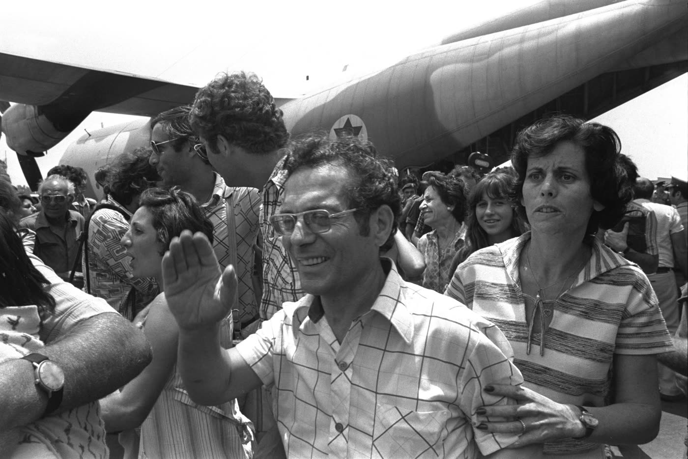
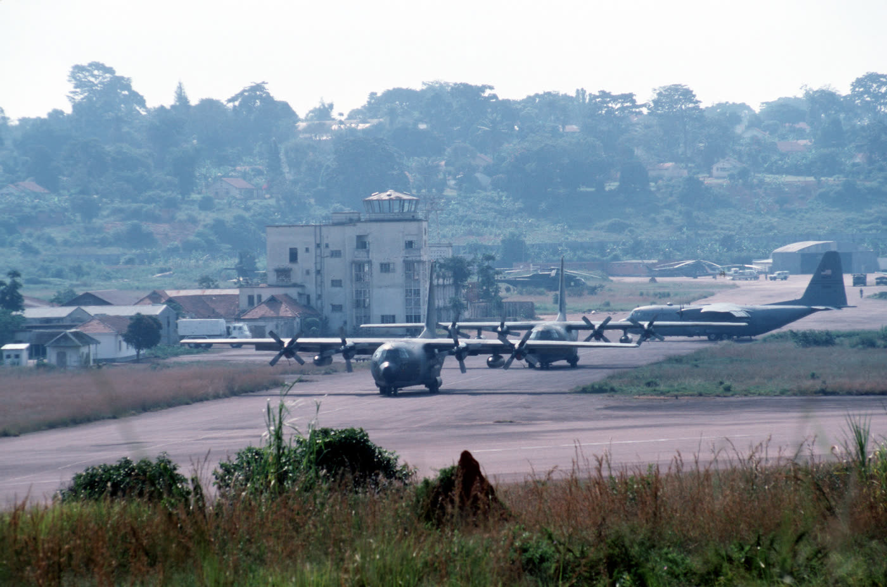
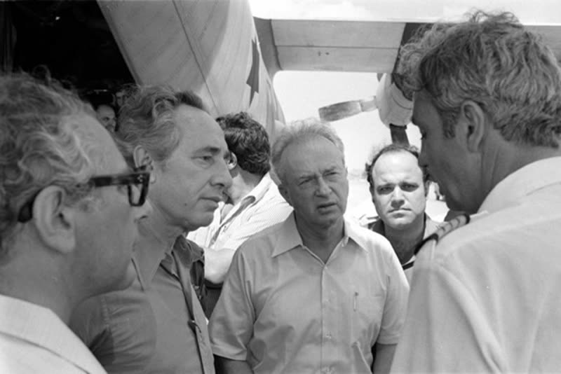
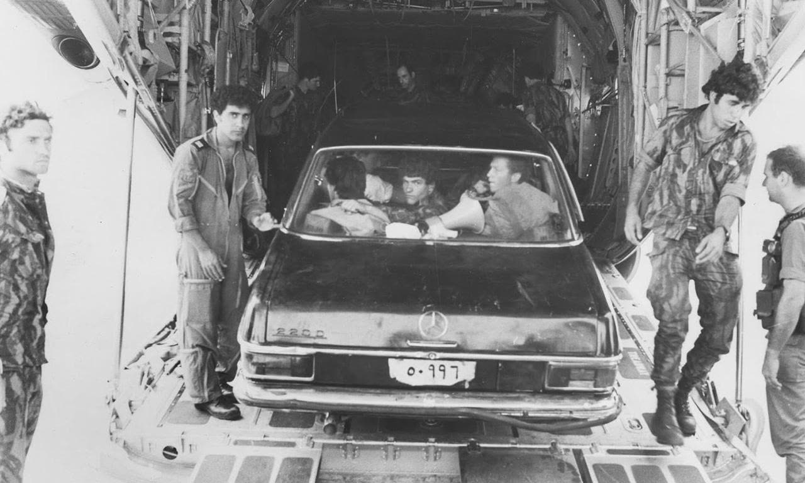
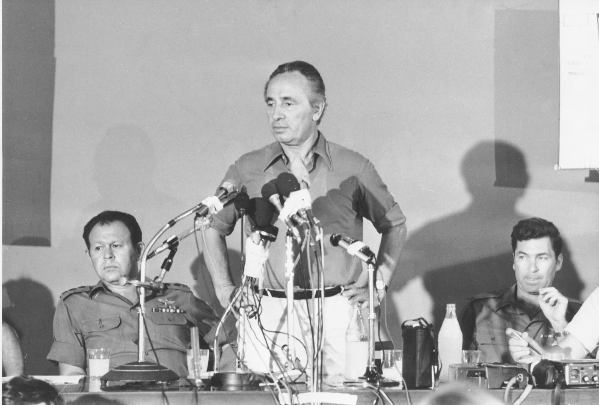
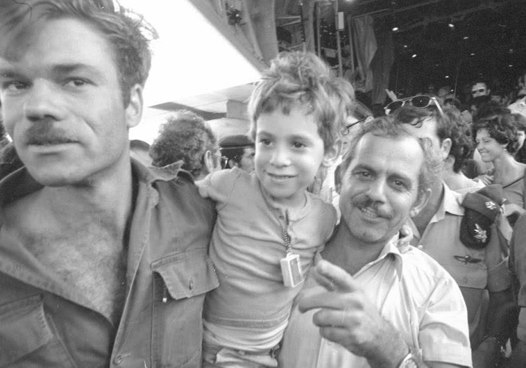
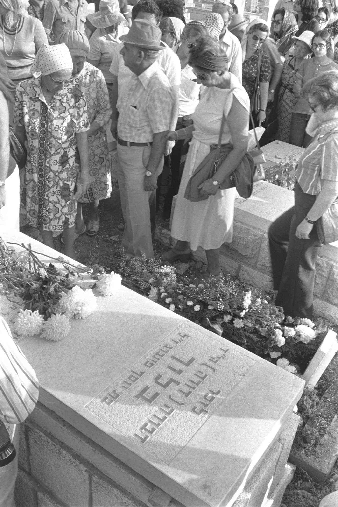

אנטבה · 4440 מילים · 8 תמונות · 3 סרטונים







התאריכים שלהלן הם תאריכי ההפצה של הסוכנות, ולא בהכרח מועד האמירה. [מ-112 · מ-117] 1. שר הביטחון מתאר את ההפרדה · AP Archive, הופץ 16.7.1976 · שמעון פרס מתאר כיצד חולקו הנוסעים בטרמינל, ומודה בפרט קטן: בישראל התקשו לתרגם את שעת האולטימטום משעון גריניץ' לשעון המקומי, ולא ידעו אם הזמן אוזל באחת או בשתיים. 2. הרמטכ"ל מסביר כיצד נפגעו החטופים · AP Archive, הופץ 10.7.1976; מסיבת העיתונאים עצמה נערכה בירושלים ב-8.7.1976 ·
https://www.youtube.com/watch?v=uWpJaqkjeDE שמעון פרס מתאר כיצד חולקו הנוסעים בטרמינל, ומודה בפרט קטן: בישראל התקשו לתרגם את שעת האולטימטום משעון גריניץ' לשעון המקומי, ולא ידעו אם הזמן אוזל באחת או בשתיים. 2. הרמטכ"ל מסביר כיצד נפגעו החטופים · AP Archive, הופץ 10.7.1976; מסיבת העיתונאים עצמה נערכה בירושלים ב-8.7.1976 · מרדכי גור מתאר בלשון יבשה מה קרה בתוך המסוף — כולל העובדה שחטופים נפגעו בחילופי האש. זו הגרסה הפחות מחמיאה, והיא נמסרה בידי המפקד עצמו. 3. הבן מבקש, ואינו יודע · AP Archive, הופץ 9.7.1976 (תיאור הסוכנות לאותו קטע נוקב בתאריך אחר, 7.9.1976 — ראו הפרק על קמפלה) ·
https://www.youtube.com/watch?v=XWeSWoPY3t0 מרדכי גור מתאר בלשון יבשה מה קרה בתוך המסוף — כולל העובדה שחטופים נפגעו בחילופי האש. זו הגרסה הפחות מחמיאה, והיא נמסרה בידי המפקד עצמו. 3. הבן מבקש, ואינו יודע · AP Archive, הופץ 9.7.1976 (תיאור הסוכנות לאותו קטע נוקב בתאריך אחר, 7.9.1976 — ראו הפרק על קמפלה) · אילן הר-טוב מבקש מאוגנדה לשחרר את אמו לפני הדיון באו"ם, ואומר שהוא די בטוח שהיא בחיים. ---
טיוטה ממופתחת. כל משפט עובדתי נושא בסוגריים מרובעים את מזהי הממצאים
שממנו נולד.[חיבור]= משפט קישור בלי טענה עובדתית חדשה.
המפתוח יורד בגרסה הסופית; שכבת הערות המקורות נשארת.
ב-27 ביוני 1976 המריא מטוס של אייר פראנס מתל אביב לפריז, עצר באתונה,
ונחטף. [מ-002 · מ-011] לפי המסירות הרשמיות היו על סיפונו בין 250 ל-268
בני אדם. [מ-011 · מ-028 · מ-100 · פ-03]
המטוס הונחת בשדה התעופה של אנטבה באוגנדה, והנוסעים הועברו למסוף ישן
שאינו בשימוש. [מ-001 · מ-003] ביום השלישי החלו החוטפים לקרוא בשמות
ולהעביר לחדר נפרד את הנוסעים הישראלים ואת היהודים שאינם ישראלים — כך לפי
נוסעת שניהלה יומן במקום ובזמן אמת. [מ-086] שר הביטחון הישראלי תיאר את
החלוקה בקצרה יותר: "לא בין צעירים לזקנים, לא בין גברים לנשים, אלא בין
ישראלים ל[לא-ישראלים]." [מ-106] שתי קבוצות של נוסעים שוחררו, וכמאה בני אדם נשארו.[מ-056 · מ-099 · מ-057] צוות המטוס הצרפתי ביקש שלא ישוחרר לפני
שישוחררו כל הנוסעים. [מ-034 · מ-077] בלילה שבין 3 ל-4 ביולי הטיסה ישראל
כוח לאנטבה והחזירה את מי שנותר. [מ-103] שלושה חטופים וקצין ישראלי אחד
נהרגו — ולפי מה שאמר הרמטכ"ל עצמו ארבעה ימים אחר כך, חלק מהחטופים נפגעו
בחילופי האש של המחלצים. [מ-078 · מ-090 · מ-104 · מ-117] אישה אחת בת 75, שנלקחה ימים קודם לכן לבית חולים
בקמפלה, לא הייתה שם באותו לילה — ולא חזרה. [מ-047 · מ-048]
טיסה 139 של אייר פראנס יצאה מתל אביב לפריז ועצרה בדרך באתונה. [מ-002]
אחרי ההמראה מאתונה השתלטו עליה ארבעה חוטפים. [מ-052] כמה אנשים היו על
סיפונה איננו יודעים עד היום, ובאותה ישיבה של מועצת הביטחון נמסרו על כך
שני מספרים מצדדים שאינם בעלי ברית זה של זה. אוגנדה אמרה "250 בני
אדם", ובהמשך אותו נאום "מעל 250"; [מ-001 · מ-100] צרפת, שהמטוס היה שלה, אמרה
"250 נוסעים"; [מ-028] ישראל אמרה 256 נוסעים ועוד 12 אנשי צוות — 268.[מ-011] ההפרש בין הקצוות הוא שמונה-עשר בני אדם, ואיש לא יישב אותו.[פ-03]
באותו נאום מסרה ישראל מספר נוסף, "בערך 260 נוסעים ואנשי צוות" — אבל
היא לא ספרה אותו בעצמה. היא ציטטה את הנוסע הצרפתי מישל קוז'ו, שתיווך בין
הנוסעים לחוטפים, שסיפר שמנהל שדה התעופה באנטבה אמר לו שהתבקש להיערך
למספר הזה. [מ-022] **זו שרשרת של שלוש חוליות — מנהל השדה, דרך קוז'ו,
דרך נציג ישראל — ולא מסירה עצמאית.** היא מופיעה כאן משום שהיא בפרוטוקול,
ולא משום שהיא מחזקת. [מ-022 · חיבור]
מה שכן אפשר לומר: צרפת ואוגנדה, שני צדדים שלא תיאמו ביניהם ולא היו
בעלי ברית, נקבו באותו מספר. [מ-028 · מ-100] ומה שאסור לגזור מזה:
שישראל טעתה. ייתכן ששלושת המספרים סופרים דברים שונים — עם צוות או בלי,
עם החוטפים או בלי. אוגנדה אומרת "בני אדם" וצרפת אומרת "נוסעים", **וגם
בין שתי אלה אין זהות ביחידת הספירה.** [מ-028 · פ-03]
הארגון שביצע את החטיפה הוא החזית העממית לשחרור פלסטין. [מ-096] אוגנדה
מסרה למועצת הביטחון שרשויותיה למדו זאת בקשר הראשון עם המטוס, [מ-096]
וישראל הצביעה על שידור של רדיו קמפלה ב-29 ביוני שנפתח במילים "אלה
דרישות החזית העממית לשחרור פלסטין" ובהמשכו הוקראה הצהרה בת שישה סעיפים.[מ-096] שני הצדדים היו יריבים באותו דיון, ושניהם נקבו באותו ארגון.[מ-096]
המטוס נחת באנטבה והנוסעים הועברו למבנה הישן של שדה התעופה. [מ-001 · מ-003]
לפי אוגנדה, החוטפים דרשו שאיש לא יתקרב למטוס, וקבעו במפורש שאנשי הביטחון
האוגנדים — יהיו הסידורים אשר יהיו — לא ייכנסו לרדיוס של חמישים מטר ממנו.[מ-111] לחוטפים שהיו על המטוס הצטרפו באנטבה אנשים נוספים;
המספר הכולל לא הוכרע — הגרסאות נעות בין שלושה לחמישה מצטרפים.[מ-052 · מ-079 · מ-093 · פ-17]
מסמך פנימי של מועצת הביטחון הלאומי האמריקנית, שנכתב ב-3 ביולי 1976 וסיווגו
הוסר מאז, מוסר הערכת מודיעין שונה משתי הגרסאות הפומביות: לפיה אמין היה
"זועם על כך שהמטוס החטוף הובא לאנטבה, משום שהדבר אילץ אותו לדחות את
תוכניות הפלישה שלו", ובה בעת קיווה "לשחק את המתווך המצליח מול קהל עולמי".[מ-069]
החוטפים דרשו לשחרר 53 אסירים המוחזקים בישראל, במערב גרמניה, בצרפת,
בשווייץ ובקניה. [מ-089] המספר הזה סופר אסירים, לא בני ערובה, והוא היחיד
בסיפור שאינו נוגע במספרי הנוסעים. [מ-101] [חיבור]
החוטפים דרשו שהצהרת המדיניות שלהם תפורסם ברבים. ממשלת אוגנדה מסרה למועצת
הביטחון שנעתרה לכך — ההצהרה שודרה שוב ושוב ב-Uganda Broadcasting Corporation
ופורסמה בעיתונות המקומית — ונימקה זאת בלשונה: "מתוך להיטות לשתף פעולה
למען בני הערובה", כדי "להשקיט את החוטפים". [מ-111]
שרה גוטר דוידסון הייתה בין הנוסעות, עם בעלה עוזי ושני בניה, רון בן ה-16
ובני בן ה-13, [מ-110] וניהלה יומן במחברת בזמן אמת. [מ-085] לפי עדותה:
"ביום השלישי החלו החוטפים לקרוא בשמות של אנשים ולהורות להם לעבור לחדר
שני, קטן ומוזנח יותר. התברר שהם מפרידים את הנוסעים הישראלים והיהודים
הלא-ישראלים מן השאר."[מ-086]
שמעון פרס, שר הביטחון, תיאר את אותה חלוקה בדברים שנשא בפני קהל, בקטע
שסוכנות AP הפיצה ב-16 ביולי 1976: [מ-117]
"הם חילקו את הנוסעים — לא בין צעירים לזקנים, לא בין גברים לנשים, אלא
בין ישראלים ל[לא-ישראלים]." [מ-106]
*(המילה האחרונה משוחזרת מן ההקשר: בתמליל האוטומטי של הקטע היא מופיעה
כשיבוש. [מ-106])*
חמישה מוסרים, ארבע הגדרות לאותה חלוקה. דוידסון, היחידה מביניהם שהייתה
בחדר, מדברת על "הנוסעים הישראלים והיהודים הלא-ישראלים". [מ-086] פרס
מדבר על ישראלים מול לא-ישראלים. [מ-106] נציג ישראל במועצת הביטחון תיאר
דווקא קריטריון דתי ולא לאומי — "הפרדת הנוסעים היהודים מן הנוסעים
הלא-יהודים", ובהמשך נאומו "כשההפרדה של היהודים נעשתה". [מ-013 · מ-053]
ממשלת צרפת מסרה שהשחרור השני נעשה "למעט אזרחים ישראלים ובעלי אזרחות
כפולה", [מ-034] ואוגנדה מסרה שהמשוחררים היו "בני לאומים שאינם ישראל או
בעלי אזרחות כפולה" — קריטריון של אזרחות. [מ-005]
ההבדל אינו סמנטי, ושתי ההגדרות האחרונות אינן על אותו אירוע. צרפת
ואוגנדה מתארות מי שוחרר, לא את סצנת ההעברה לחדר; [מ-053] וקבוצת
"הישראלים" וקבוצת "היהודים" אינן חופפות — יהודי שאינו אזרח ישראל נכלל
בתיאור של דוידסון ושל ישראל, ואינו נכלל בתיאורים של צרפת ואוגנדה.
**עצם ההפרדה מוסכמת על כל חמשת המוסרים; מה בדיוק היה קו החיתוך —
אינו מוסכם, ובדף הזה הוא נמסר לפי מי שהייתה בחדר.**[חיבור · מ-086 · מ-106 · מ-013 · מ-034 · מ-005]
על נקודה אחת יש מחלוקת. ישראל טענה במועצת הביטחון שחיילים אוגנדים,
בפקודתו הישירה של הנשיא אמין, פיקחו על ההפרדה. [מ-013] דוידסון, שהייתה
בחדר, ייחסה את קריאת השמות לחוטפים. [מ-086] פרס אמר "הם חילקו" ולא נקב
במי. [מ-106]
שתי עדויות של אנשים שהיו במטוס הגיעו לדיון במועצה — ושתיהן הגיעו לשם
בפי צד מעוניין, זה אחרי זה. שר החוץ של מאוריציוס, המדינה שהגישה את התלונה
נגד ישראל ושראש ממשלתה כיהן אז כיו"ר ארגון האחדות האפריקאית, ציטט את
מישל בקוס, קברניט המטוס, מתוך "ניו יורק טיימס" של 6 ביולי 1976:
"השמירה עלינו הובטחה באופן בלעדי בידי החוטפים; חיילים אוגנדים מעולם לא
הוחלפו בהם". [מ-097 · מ-050] למחרת פתח נציג ישראל, מר הרצוג, במילים
"משהעיתונות צוטטה כאן בהרחבה, הרשו לי לתרום גם אני את חלקי", וציטט
מ"ניו יורק טיימס" של 5 ביולי את הנוסע מישל קוז'ו: "כל אותו
הזמן הרגשנו ששומרים עלינו גם החוטפים וגם האוגנדים". [מ-050]
הרצוג עצמו הוסיף שהוא מודע להצהרת בקוס "כפי שדווחה ב'ניו יורק טיימס' של
6 ביולי וצוטטה כאן בידי שר החוץ של מאוריציוס", וטען שהראיות הרבות סותרות
אותה. [מ-050]
מי הביא כל עדות הוא חלק מהעדות. שני הנוסעים היו שם, שניהם דוברי-אמת
אפשריים, ויש הסבר שאינו מצריך שאחד מהם ישקר: בקוס נשאר עד הסוף, קוז'ו
שוחרר במשלוח השני, וייתכן שהמצב השתנה בין התקופות. אבל אף אחת מהעדויות
לא נאספה כאן בנייטרליות — כל צד ציטט את הנוסע שנוח לו — ואת גיליונות
ה"ניו יורק טיימס" עצמם לא ראיתי, אלא רק את הציטוטים מהם בפרוטוקול
האו"ם. [חיבור · מ-050 · מ-097 · פ-16]
שההפרדה נעשתה — מבוסס בחמישה מקורות נפרדים, ובכללם שני יריבים.
לפי איזה קו בדיוק, ומי בדיוק ביצע אותה — שניהם פחות מבוססים מכפי
שהגרסה הישראלית הרשמית מציגה.[חיבור · מ-086 · מ-106 · מ-013 · מ-034 · מ-005]
ב-30 ביוני שוחררו 47 נוסעים. [מ-056] צוות אייר פראנס לא היה ביניהם,
ולא בקבוצה שאחריה. ממשלת צרפת דיווחה למועצת הביטחון כי "הצוות ביקש
מצדו שלא לשחררו לפני כלל הנוסעים". [מ-034] ארבעים שנה אחר כך תיאר
בקוס את ההחלטה בלשונו:
"אמרתי לצוות שלי שעלינו להישאר עד הסוף, כי זו המסורת שלנו, ולכן איננו
יכולים לקבל שחרור. כל הצוות שלי הסכים, בלי יוצא מן הכלל."[מ-077]
הדיווח הצרפתי בן-הזמן והעדות המאוחרת מתארים את אותו דבר. [מ-034 · מ-077]
מה שמתועד הוא הבקשה שהועברה לאו"ם; מה שאינו מתועד במקור ראשוני הוא
סצנת סירוב בשדה התעופה. [מ-034 · פ-10]
באותו לילה, לפי הניו יורק טיימס, הקריא אחד מאנשי הצוות הצהרה בשם הצוות
שהחמיאה לנשיא אמין על "טיפולו המתמיד". בקוס אמר באותו ערב שההצהרה הובנה
שלא כהלכה, ושכוונת הצוות הייתה רק ש"הרשויות האוגנדיות עשו מאמצים להבטיח
תנאים חומריים הגונים לבני הערובה". [מ-097]
ב-30 ביוני שוחררו 47 בני אדם. [מ-056] ב-1 ביולי, בשעה שלוש אחר הצהריים,
שוחררו 100 נוספים, והועברו בידי שגריר סומליה. [מ-035 · מ-099] נשארו
כמאה. [מ-057]
המספר המדויק של הנשארים לא הוכרע. ישראל, שהייתה הצד היחיד שידע בוודאות
כמה אנשים עלו למטוסיה, אמרה במועצת הביטחון רק "יותר ממאה" ולא נקבה במספר.[מ-057] פרס אמר "כמאה אנשים". [מ-106] מספרים מדויקים שמסתובבים
בעיתונות מאז — 103 ו-105 — אינם נשענים על ספירה עצמאית. [מ-057 · מ-090 · פ-06]
האולטימטום הראשון נקבע ל-1 ביולי, ולאחר מכן נדחה ל-4 ביולי בשעה 11:00
לפי שעון גריניץ'. [מ-004 · מ-005 · מ-034] **על שעת המועד הראשון עצמו
נמסרו שתי גרסאות:** אוגנדה אמרה 14:00 שעון מקומי, "שהם 11:00 גריניץ'";[מ-004] ישראל, בנאומה במועצת הביטחון, אמרה 15:00 שעון מקומי. [מ-012]
שעון אוגנדה הוא גריניץ' ועוד שלוש שעות — כך עולה מנתוני אוגנדה עצמה —
ולכן המספר שלה עקבי עם עצמו. **את הפער בין 14:00 ל-15:00 לא הצלחתי
ליישב, ואיני יודע ממה הוא נובע.** [חיבור · מ-001 · מ-004 · מ-012]
ומה שכן מוסכם, מכיוון בלתי צפוי. שר הביטחון של ישראל, שמעון פרס, נקב
באותה שעה בגריניץ' שאוגנדה נקבה בה:
"ב-1 ביולי, בוקר יום חמישי, לפי הודעת החוטפים, האולטימטום היה אמור לפוג
בשעה 11:00 לפי שעון גריניץ'. אני מודה שהתקשינו לתרגם את שעון גריניץ'
לשעון המקומי בגלל שעון הקיץ אצלנו, ולא ידענו בדיוק אם זה יהיה בשעה אחת
או בשתיים אחר הצהריים."[מ-106]
כלומר: על השעה בגריניץ' אין מחלוקת בין הצדדים כלל — אוגנדה, ישראל
והחוטפים כולם ב-11:00. המחלוקת היא בהמרה לשעון מקומי בלבד.[חיבור · מ-004 · מ-106] וצריך לשים לב לפרט אחד שקל לטעות בו: ההתלבטות
של פרס — "אחת או שתיים אחר הצהריים" — היא בשעון ישראל, ואינה אותו זוג
מספרים כמו המחלוקת 14:00–15:00, שהיא בשעון אנטבה. [חיבור · מ-106]
ב-4 ביולי, בשעה 00:34 לפי שעון גריניץ', שיגר מזכיר המדינה האמריקני הנרי
קיסינג'ר מברק מסווג לשגריר ארה"ב בניירובי, ובו הנחיה לפנות לנשיא קנייתה
או, לחלופין, ל"קוינאנג'ה או אולי נג'ונג'ו, מי שנהנה מאמונו המוחלט של
קנייתה ושהיה קרוב לוודאי מעורב בפעולות הישראליות". [מ-068] המברק מלמד
שממשלת ארה"ב הניחה בזמן אמת מעורבות קנייתית. [מ-068] מקורות קנייתיים
מאוחרים מתארים סיוע כזה, אך אינם מקור בלתי תלוי, משום שהמברק פורסם.[מ-092]
נציג ישראל, מר הרצוג, תיאר את המבצע בפני מועצת הביטחון ב-9 ביולי 1976:[מ-112]
"בלילה שבין השלישי לרביעי ביולי 1976 יצא צה"ל למבצע יוצא דופן שייכנס
להיסטוריה, חילץ את בני הערובה וליווה אותם אל מקום מבטחים."[מ-103]
באותו נאום הצהיר הרצוג כי "ישראל קיבלה על עצמה אחריות מלאה ובלעדית
לפעולה, ושום ממשלה אחרת לא הייתה שותפה בשום שלב לתכנון או לביצוע".[מ-103] הצהרה זו עומדת במתח עם המברק של קיסינג'ר. [מ-103 · מ-068] [חיבור]
לפי דיווח ה-BBC, מטוסי הכוח טסו כשמונה שעות וחצי, למרחק של יותר מ-4,000
קילומטר. [מ-091] לא מצאתי מקור רשמי בן-זמן למרחק ולמשך הטיסה. [פ-29]
הרמטכ"ל מרדכי גור תיאר את מה שקרה במסוף במסיבת עיתונאים שקיים בירושלים
בפני עיתונאים זרים ב-8 ביולי 1976; סוכנות AP הפיצה את הקטע יומיים אחר כך.[מ-104 · מ-117]
"המהירות שבה בוצע המבצע הפתיעה את כל המחבלים ואת הכוחות שם עד כדי כך
שהקרב הסתיים מהר מאוד, ואין ספק שרובם לא הבינו עד הרגע האחרון מה קרה
באמת. שניים מהם פתחו באש בעודם בפנים, וחילופי האש היו קצרים מאוד."[מ-104]
שלושה מבני הערובה נהרגו: ז'אן-ז'אק מימוני, פסקו כהן ואידה בורוכוביץ'.[מ-078] קצין ישראלי בכיר אחד נהרג — יונתן נתניהו. [מ-090 · מ-103]
חיילים וחטופים נוספים נפצעו. [מ-103]
**כיצד נהרגו שלושת החטופים — על כך נמסרו שתי גרסאות שונות מפי שני נציגים
ישראלים רשמיים, בתוך יממה זה מזה. הראשון שדיבר היה המפקד.** ב-8 ביולי
1976, בירושלים, אמר הרמטכ"ל מרדכי גור בפני עיתונאים זרים: [מ-104 · מ-117]
"למרבה הצער, במהלך חילופי האש האלה לפחות שניים מהאנשים שלנו — אני מדבר
על החטופים — לא צייתו לפקודה לשכב, קמו על רגליהם, ונפגעו מחילופי האש."[מ-104]
למחרת, ב-9 ביולי, אמר נציג ישראל במועצת הביטחון כי "שלושה מבני הערובה
נהרגו בידי המחבלים, לפני שהמחבלים נורו בידי הכוח הישראלי". [מ-103 · מ-112]
סדר הדברים הוא חלק מהעניין: הגרסה הפחות מחמיאה נמסרה ראשונה, ומפי
האיש שפיקד על המבצע; הגרסה המחמיאה נמסרה יממה אחריה, בזירה הדיפלומטית.[חיבור · מ-104 · מ-103 · מ-117]
עדויות שנאספו מאוחר יותר תואמות את תיאורו של גור ולא את זה של הרצוג:
לפיהן מימוני וכהן נורו בטעות בידי המחלצים, ובורוכוביץ' נורתה, לפי בקוס,
בידי אחד החוטפים. [מ-078] הדף הזה אינו קובע מי ירה בכל אחד משלושת
ההרוגים. [מ-105]
לא כל החוטפים נהרגו. הרצוג עצמו שאל במועצת הביטחון ב-13 ביולי 1976:
"מה עלה בגורלם של שניים או שלושה הניצולים של מבצע החילוץ בשדה התעופה
באנטבה?" [מ-090] מספרם הכולל של החוטפים לא הוכרע, וגורל הניצולים לא
אותר. [פ-17 · פ-28]
על מספר החיילים האוגנדים שנהרגו אין ספירה עצמאית. שר החוץ של מאוריציוס,
שהופיע במועצת הביטחון בשם ארגון האחדות האפריקנית, אמר: "יותר מעשרים
חיילים אוגנדים מתו, וכמספר הזה נפצעו." [מ-098] הדובר היה צד לתלונה,
ואוגנדה עצמה לא מסרה מספר רשמי. [מ-098 · פ-19]
דורה בלוך, בת 75, אזרחית ישראל ובריטניה, פונתה מהמסוף לבית חולים בקמפלה
לפני ליל החילוץ, ולא הייתה שם כשהכוח הגיע. [מ-047 · מ-048] היא לא חזרה.[מ-047]
בנה, אילן הר-טוב, שהיה בעצמו בין החטופים, נשא דברים בקטע ארכיון של
סוכנות AP:
"אני לא [מקבל] את הדיווח בניו יורק טיימס שהיא נגררה בבכי. זה לא הטיפוס
שלה. היא הייתה שקטה. ובמצב הזה — אני די בטוח שהיא בחיים."[מ-107]
(המילה בסוגריים משוחזרת: בהקלטה היא אינה נשמעת בבירור.[מ-107])
באותם דברים ביקש שאוגנדה תשחרר אותה לפני הדיון במועצת הביטחון.[מ-107] היא כבר לא הייתה בחיים. [מ-047 · מ-075 · מ-118]
על מועד הדברים יש סתירה בתוך המקור עצמו, והיא לא הוכרעה עד הסוף.
כותרת הקטע נושאת את תו ההפצה "9 7 76"; תיאור הסוכנות לאותו קטע כותב
"7 בספטמבר 1976". [מ-117] הכרעתי לפי התוכן: הדיון במועצת הביטחון
התקיים בין 9 ל-14 ביולי, והר-טוב מבקש שאמו תשוחרר לפניו — **ספטמבר אינו
אפשרי.** [מ-112 · מ-117] ומכיוון ש-"9 7 76" הוא תאריך הפצה ולא תאריך
אמירה, מה שאפשר לומר בוודאות הוא שהדברים נאמרו **לכל המאוחר ב-9 ביולי
1976** — לא בהכרח בו ביום. [מ-117]
**ב-12 ביולי 1976 מסרה ממשלת בריטניה הודעה לבית הנבחרים, וזהו המקור
בן-הזמן החזק ביותר לגורלה — ולא ישראלי ולא אוגנדי.** שר המדינה במשרד
החוץ והחבר העמים, אדוארד רולנדס, אמר:
"עלי להודיע לבית, בצער עמוק, שכמעט אין ספק שגברת בלוך נלקחה מחדרה בבית
החולים מולאגו בסביבות 21:30 שעון מקומי ב-4 ביולי, ושאיננה בחיים עוד.
[...] יהיו הנסיבות שבהן אירע מותה של גברת בלוך אשר יהיו, על ממשלת
אוגנדה להעמיד את האחראים לדין."[מ-118]
באותה הודעה מסר רולנדס שאוגנדה, בפתק ששלחה יומיים קודם לכן לנציב הבריטי
בקמפלה, המשיכה להכחיש כל ידיעה על מקום הימצאה וחזרה על הטענה שישראל
נושאת באחריות לה כמו לשאר בני הערובה. [מ-118] בריטניה דחתה זאת בנימוק
עובדתי: גברת בלוך "נראתה בידי איש מסגל הנציבות העליונה בבית החולים הרבה
אחרי שהמבצע הישראלי בשדה התעופה אנטבה הסתיים". [מ-118] **וכאן שתי
ממשלות מכחישות זו את זו על עובדה בדידה אחת:** שלושה ימים קודם לכן מסרה
אוגנדה למועצת הביטחון שהדיווחים שלפיהם "דיפלומט ראה את גברת דורה בלוך
בבית החולים ביום ראשון" הם כוזבים. [מ-024 · מ-118]
ועל השאלה מי אחראי — שתי העמדות, כפי שנמסרו. בניה, באמצעות חבר
הפרלמנט גרוויל ג'נר, מסרו לבית שהם "מייחסים את האשמה לאדם אחד ולאדם אחד
בלבד, והוא הנשיא אידי אמין, שבלעדיו לא קורה דבר במדינה ההיא". [מ-118]
ממשלת בריטניה לא קבעה זאת: "איני סבור שנוכל להתייחס לשאלה אם הנשיא אמין
היה אחראי באופן אישי. לא קיבלנו שום אינדיקציה ברורה ולא נערכה חקירה
מפורטת." [מ-072] וצריך לומר על מה נשאל: את השאלה שאליה השיב הציג
דיוויד סטיל, והיא עסקה בחיילים האוגנדים שנהרגו בפשיטה — לא במותה של
בלוך. [מ-118] מה שרולנדס כן אמר עליה, בתשובה לג'נר, היה: "תקווה אכזרית
בלבד תהיה אם אומר שיש תקווה כלשהי שהיא בחיים." [מ-118]
באותו דיון חזרה בריטניה שוב ושוב על כך שבאוגנדה שוהים למעלה מחמש מאות
אזרחים בריטים, ושאין לעשות דבר שיסכן אותם. [מ-071 · מ-118]
בשנת 1979, אחרי נפילת שלטונו של אמין, נמצאו שרידיה קבורים בכפר בקרבת
קמפלה, הוצאו בסיוע הרשויות האוגנדיות החדשות, וזוהו בישראל בידי הפתולוג
ד"ר מוריס רוגוב, על פי צילומי רנטגן ותיקים רפואיים. היא הובאה לקבורה
ממלכתית. [מ-075]
מועצת הביטחון של האו"ם דנה בפרשה בין 9 ל-14 ביולי 1976, **ולא קיבלה שום
החלטה.** [מ-042] הצעת החלטה אחת, של בנין, לוב וטנזניה, נמשכה בלי הצבעה.[מ-042] ההצעה השנייה, של בריטניה וארצות הברית, הועלתה להצבעה ונכשלה:
שישה בעד, אף לא אחד נגד, שתי נמנעות — פחות מתשעת הקולות הדרושים, ושבעה
חברים סירבו להשתתף בהצבעה. [מ-042] נציג בריטניה, שהציעה אותה, אמר על
"הצעת ההחלטה שזה עתה לא קיבלנו". [מ-042]
מזכ"ל האו"ם קורט ולדהיים ביקש לדבר בפתח הדיון. הוא ציטט את עצמו: "אין
בידי כל הפרטים, אך נראה ברור שמטוסים ישראליים נחתו באנטבה, וזו מהווה
הפרה חמורה של ריבונותה של מדינה חברה באו"ם." [מ-095] באותה אמירה הוסיף
שמדובר בבעיות חסרות תקדים, "שמעוררות שאלות הומניטריות, מוסריות, משפטיות
ומדיניות שלגביהן, בעת הזאת, אין כללים או פתרונות מוסכמים", ושההכרעה
לגופו של עניין היא של המועצה. [מ-095]
אבל האו"ם לא הפסיק לעסוק בזה כשהדיון נסגר. פעמיים, בהפרש של עשרים וארבע
שנה, ניסו לכתוב כלל בינלאומי שאנטבה עומדת ביסודו. **בשתי הפעמים הכלל
שהתקבל בסוף אמר את ההפך ממה שהמבצע עשה.**
בפעם הראשונה זה קרה כמעט מיד. הספרייה האור-קולית למשפט בינלאומי של האו"ם,
בהערה שלה על האמנה הבינלאומית נגד לקיחת בני ערובה, מספרת שסוגיה שנויה
במחלוקת בניסוח האמנה הייתה השימוש בכוח חוצה-גבולות לחילוץ בני ערובה,
"בעקבות מבצע ישראלי שנוי במחלוקת באנטבה, אוגנדה, ב-1976". [מ-066]
מדינות אפריקה וערב דרשו סעיף מפורש שלפיו "מדינות לא יזדקקו לאיום בכוח או
לשימוש בכוח נגד ריבונותן, שלמותן הטריטוריאלית או עצמאותן של מדינות אחרות
כאמצעי לחילוץ בני ערובה"; אחרות סברו שסעיף כזה מיותר. [מ-066] הפשרה
שהתקבלה, על בסיס נוסח סורי, היא סעיף 14 לאמנה: "אין באמנה זו דבר שיתפרש
כמצדיק הפרה של שלמותה הטריטוריאלית או של עצמאותה המדינית של מדינה, בניגוד
למגילת האו"ם." [מ-066] **אנטבה לא הולידה סעיף שמתיר חילוץ. היא הולידה
מאבק ניסוח שבסופו סעיף שאינו מצדיק אותו.**
בפעם השנייה זה קרה בשנת 2000, בוועדת המשפט הבינלאומי של האו"ם. הכתב
הממונה לנושא ההגנה הדיפלומטית, ג'ון דוגארד, הציע סעיף שיתיר שימוש
בכוח לחילוץ אזרחים בחמישה תנאים מצטברים, וכתב עליו:
"ההתערבות בכוח של קומנדו ישראלי בשדה התעופה באנטבה, אוגנדה, ב-1976,
עשויה לשמש מודל למבצע חילוץ מסוג זה. **הסעיף הנוכחי, שנוסח על בסיס
אותו תקדים,** נועד להגביל את הזכות להשתמש בכוח."[מ-065]
הוועדה דחתה את הסעיף באותו מושב עצמו. [מ-115] בדוח הוועדה מתועדות
שתי דעות, ושתיהן נגד: האחת שכל כלל "המתיר, מצדיק או מכשיר שימוש בכוח הוא
מסוכן ובלתי-מתקבל על הדעת", והשנייה ששאלת הכוח כלל אינה שייכת לנושא ואינה
בסמכות הוועדה. [מ-115] דוגארד עצמו סיכם: "היה אפוא ברור למדי שסעיף 2
אינו מקובל על הוועדה." [מ-115]
ובמקום איסור מפורש על שימוש בכוח נבחרה דרך אחרת — להכניס את השלום להגדרה
עצמה. [מ-115] הנוסח שהוועדה אימצה סופית ב-2006 מונה תשעה-עשר סעיפים,
אין בו שום סעיף על שימוש בכוח, וסעיף 1 שלו פותח כך:
"לעניין טיוטת הסעיפים הנוכחית, הגנה דיפלומטית היא העלאה בידי מדינה,
**בדרך של פעולה דיפלומטית או אמצעים אחרים של יישוב סכסוכים בדרכי
שלום**, של אחריותה של מדינה אחרת לנזק שנגרם..."[מ-115]
**זה מה שהעולם עשה עם אנטבה: פעמיים ישב לנסח, ופעמיים יצא מזה כלל
מצמצם.** מה שהמבצע נתן למשפט הבינלאומי אינו היתר — הוא הדיון שבסופו נכתב
שאין היתר. [חיבור · מ-066 · מ-115]
[פ-03] 102, 103 ו-105. [פ-06]
ישראל. בשעון גריניץ' שני הצדדים מסכימים על 11:00. [מ-004 · מ-012 · מ-106]
ואינם מציינים דגם. [פ-33]
[פ-17 · פ-28][פ-19][מ-105] שונות — ישראלים ויהודים לא-ישראלים (עדת הראייה), ישראלים מול
לא-ישראלים (פרס), יהודים מול לא-יהודים
(ישראל באו"ם), אזרחות ישראלית (צרפת ואוגנדה, ועל השחרור ולא על ההעברה
לחדר). שההפרדה נעשתה — מוסכם על כולם. [מ-086 · מ-013 · מ-034 · מ-005]
אך לא הצלחתי לאמת זאת אצל הגוף המעניק. [מ-081 · פ-23]
אזרחים המבוסס על אנטבה. שני הניסיונות שמצאתי הסתיימו בהפך. [פ-34]
ומה שמסתובב בהקשר הזה ואינו עומד: הטענה שאנטבה הולידה את יחידות
הלוחמה בטרור במערב. על GSG 9 הגרמנית אפשר לומר זאת חד: לפי המוסד
הפדרלי הגרמני Haus der Geschichte היא הוקמה ב-26 בספטמבר 1972, ארבע שנים
לפני אנטבה. [מ-064] על דלתא האמריקנית אפשר לומר פחות מזה: משרד
ההיסטוריה של פיקוד המבצעים המיוחדים של צבא ארה"ב מתארך את הקמתה לנובמבר
1977 — אחרי אנטבה — אך תולה את מקורה בשירותו של מקימה ב-SAS הבריטי
בשנים 1962–1963, ואינו מזכיר את אנטבה כלל. [מ-064] היעדר אזכור אינו
הוכחה לאי-קיום, ולכן זה נכתב כך ולא חזק מזה. [מ-064] [חיבור]
וכן, אין מקור רשמי בן-זמן לסכום כופר כספי. [מ-089]
| # | קובץ | כיתוב |
|---|---|---|
| ת-1 | GPO D388-050 | נוסעי אייר פראנס ששוחררו מאנטבה, מיד עם הנחיתה בישראל, 4 ביולי 1976. במרכז — יד מונפת; לצדה, מבט מחפש. צילום: משה מילנר, לע"מ · CC BY-SA 3.0 |
| ת-2 | USAF DF-ST-02-03033 | הטרמינל הישן בשדה התעופה של אנטבה, שבו הוחזקו החטופים, בצילום של חיל האוויר האמריקני מ-1994, שמונה-עשרה שנים אחרי. בחזית חונים שלושה מטוסי תובלה אמריקניים; המבנה נראה ממרחק. זהו התצלום היחיד בדף שצולם באנטבה. צילום: MSGT Rose Reynolds · נחלת הכלל |
| ת-3 | דובר צה"ל XI | ראש הממשלה יצחק רבין ושר הביטחון שמעון פרס בשיחה עם גבר בחולצת מדים שעל כתפו פסי דרגה של קברניט אזרחי; לפי ארכיון דובר צה"ל זהו מישל בקוס, קברניט מטוס אייר פראנס, 4 ביולי 1976. ממשלת צרפת מסרה למועצת הביטחון שהצוות ביקש שלא ישוחרר לפני כל הנוסעים. צילום: אורי הרצל צחיק, דובר צה"ל · CC BY-SA 3.0 |
| ת-4 | דובר צה"ל IV | מכונית מרצדס אזרחית עמוסה בתוך מטוס תובלה של חיל האוויר. לפי ארכיון דובר צה"ל זו המכונית ששימשה את כוח החילוץ באנטבה. צילום: דובר צה"ל · CC BY-SA 3.0 |
| ת-6 | דובר צה"ל XV | שני גברים וילד בנמל התעופה בן-גוריון, 4 ביולי 1976; על צוואר הילד תלוי תג זיהוי. לפי תיאור ארכיון צה"ל הילד הוא שי גרוס ואביו ברוך גרוס אוחז בו — מי משני הגברים הוא האב, התיאור אינו אומר. צילום: אבי שמחוני ומיקי צרפתי, ארכיון צה"ל ומערכת הביטחון · CC BY-SA 3.0 |
| ת-5 | דובר צה"ל XIX | שמעון פרס במסיבת עיתונאים אחרי המבצע, יולי 1976. לפי ארכיון דובר צה"ל יושבים לצדו דן שומרון ומרדכי גור. צילום: דובר צה"ל · CC BY-SA 3.0 |
| ת-7 | GPO D89-052 | אילן הר-טוב, בנה של דורה בלוך, ספטמבר 1976. הר-טוב היה בעצמו בין החטופים; אמו נותרה בבית החולים בקמפלה. צילום: משה מילנר, לע"מ · CC BY-SA 3.0 |
| ת-8 | GPO D388-063 | בני משפחתה של דורה בלוך ליד קברה, 1979. צילום: נינו הרמן, לע"מ · CC BY-SA 3.0 |
סדר בדף: ת-1 (ראש) → ת-2 (אנטבה, 28 ביוני) → ת-3 (הצוות) → ת-4
(הלילה) → ת-6 (הלילה, סוף) → ת-5 (המחיר) → ת-7 (קמפלה) → ת-8 (קמפלה, סוף).
הערה שנכנסת לדף: אין בנמצא תצלום ברישיון פתוח מתוך המסוף באנטבה בשבוע
החטיפה. כל התצלומים כאן צולמו בישראל, אחרי, או באנטבה שנים אחר כך.
התאריכים שלהלן הם תאריכי ההפצה של הסוכנות, ולא בהכרח מועד האמירה.[מ-112 · מ-117]
https://www.youtube.com/watch?v=uWpJaqkjeDE
*שמעון פרס מתאר כיצד חולקו הנוסעים בטרמינל, ומודה בפרט קטן: בישראל
התקשו לתרגם את שעת האולטימטום משעון גריניץ' לשעון המקומי, ולא ידעו
אם הזמן אוזל באחת או בשתיים.*
מסיבת העיתונאים עצמה נערכה בירושלים ב-8.7.1976 ·
https://www.youtube.com/watch?v=XWeSWoPY3t0
*מרדכי גור מתאר בלשון יבשה מה קרה בתוך המסוף — כולל העובדה שחטופים
נפגעו בחילופי האש. זו הגרסה הפחות מחמיאה, והיא נמסרה בידי המפקד עצמו.*
לאותו קטע נוקב בתאריך אחר, 7.9.1976 — ראו הפרק על קמפלה) ·
https://www.youtube.com/watch?v=MDSNtvfTFKs
*אילן הר-טוב מבקש מאוגנדה לשחרר את אמו לפני הדיון באו"ם, ואומר שהוא
די בטוח שהיא בחיים.*
מסמכים רשמיים בני-הזמן: פרוטוקולי מועצת הביטחון של האו"ם S/PV.1939
עד S/PV.1943, 9–14 ביולי 1976 · פרוטוקול בית הנבחרים הבריטי, 12 ביולי
1976 · מברקי משרד החוץ האמריקני ומסמכי המועצה לביטחון לאומי, יולי 1976,
שסיווגם הוסר ופורסמו בסדרת FRUS.
מסמכי האו"ם המאוחרים: ועדת המשפט הבינלאומי, דין וחשבון ראשון בנושא
הגנה דיפלומטית, A/CN.4/506 (2000), סעיף 59 — הצעה, לא דין · דוח ועדת
המשפט הבינלאומי על עבודת מושבה ה-52 (2000), פרק ה', סעיפים 430–439 —
הדיון שבו נדחתה ההצעה · טיוטת הסעיפים בדבר הגנה דיפלומטית, **הנוסח
שאומץ ב-2006** (A/61/10), סעיפים 1–19 · ספריית המשפט האורקולית של האו"ם,
רשומת ההיסטוריה של אמנת בני הערובה.
עיתונות ותקשורת: AP Archive (חומר חדשותי מצולם, יולי 1976) · BBC
(2016) · JTA (1979) · ניו יורק טיימס, 6 ביולי 1976, כפי שצוטט מילולית
בפרוטוקול מועצת הביטחון.
תצלומים: אוסף התצלומים הלאומי, לשכת העיתונות הממשלתית · ארכיון דובר
צה"ל · חיל האוויר של ארצות הברית. הרישיון של כל תצלום מצוין בכיתוב.
מה לא שימש מקור: סרטים עלילתיים, לרבות סרט משנת 1977 שקטעים ממנו
מופצים ברשת ככתוביות "תיעוד מ-1976".
entebbeנכתב בסדר העבודה שנקבע: קריאה אחת כגולש מתחילה ועד סוף, לפני פתיחת מקור
אחד. רק אחריה הבדיקה מול המקורות.
מבצע אנטבה: הפרדה לפי לאום, ולילה אחד שבו חולצו כמאה בני ערובה
לפני שקראתי מילה נוספת, זה מה שהבנתי:
ישראלים מול לא-ישראלים. הבנתי שזה הקריטריון היחיד, וששאלת הקריטריון סגורה.
לו שבעה ימים של החזקה.
זה התברר כשאלה שהדף עצמו נאבק בה — ולכן הסביל כאן הוא בחירה נכונה.
שני מהארבעה התבררו כלא מדויקים. ראו ממצא 8 (הקריטריון) וממצא 7 (הגודל).
נכתבו תוך כדי הקריאה הראשונה, לפני שפתחתי מקור.
"256 נוסעים ו-12 אנשי צוות". 256+12 זה 268. למה הטריילר עוצר ב-260?
(הפך לממצא 7.)
נשמע כמו שלושה עדים. באמת שלושה? (הפך לממצא 2.)
ממאה". מאה זה למטה או למעלה? הקורא שקורא רק את הטריילר מקבל תקרה.
גם מי שהביא אוכל לחטופים? (הפך להערה 13.)
אזורי-זמן ולא יושב" — ומיד אחר כך מצוטט שר הביטחון הישראלי שאומר
שהתקשו לתרגם שעון גריניץ' לשעון מקומי. אז זה כן עניין של תרגום שעות?
הפסקה הזאת סותרת את עצמה מול העיניים שלי. (הפך לממצא 5.)
ביולי? כלומר גור דיבר אחרי הדיפלומט? (הפך לממצא 3.)
הבנתי שבריטניה סירבה לקבוע מי אחראי למותה. אבל אם היא סירבה לקבוע,
מאיפה הדף יודע ארבע שורות למטה שהיא כבר לא הייתה בחיים? *(הפך לממצא 4 —
וזו השאלה שהניבה את הממצא החמור ביותר בתיק.)*
מי קיבל את זה? ועדה שכתבה טיוטה זה לא בית מחוקקים. (הפך לממצא 1.)
ובשורה 216 מסופר שהיא נלקחה מהחדר ב-4 ביולי. חמישה ימים. הבן לא ידע?
(התשובה חיובית ומתועדת — אבל התאריך עצמו התברר כשנוי במחלוקת: ממצא 3ב.)
היכן הפסקתי להתעניין. בפרק "מה שהעולם עשה עם זה", בפסקת ועדת המשפט
הבינלאומי (שורות 237–246). זו פרוזה משפטית צפופה שאין בה בן אדם, והעין
מחליקה ממנה אל הרשימה הבאה. שם בדיוק ישב הכשל החמור ביותר בדף. גם
הרשימה "מה עדיין לא ידוע" (248–260) איבדה אותי בסעיף הרביעי — שמונה כדורים
ברצף הם קיר, לא רשימה.
מקום: שורות 237–246 (ובעקיפין כל פרק "מה שהעולם עשה עם זה").
הבעיה. הדף כותב שדוח דוגארד "קובע", שהסעיף שנוסח **"מונה חמישה
תנאים מצטברים שרק בהתקיימם מותרת פעולה כזאת", ומסכם: "אנטבה נכנסה
למשפט הבינלאומי כתקדים שמגבילים לפיו."** שלוש הקביעות מתארות דין קיים.
בפועל מדובר בהצעה של כתב ממונה בדוח ראשון משנת 2000, **שוועדת המשפט
הבינלאומי לא אימצה.** הנוסח שהוועדה כן אימצה ב-2006 אינו כולל שום סעיף
על שימוש בכוח, וסעיף 1 שלו מגדיר את ההגנה הדיפלומטית כפעולה **בדרכי שלום
בלבד** — כלומר ההפך הגמור מן הכלל שהדף מייחס למשפט הבינלאומי.
הראיה. ILC, Draft articles on Diplomatic Protection, **הנוסח שאומץ
ב-2006** (A/61/10), שהורדתי ופתחתי:
"Article 1 — Definition and scope. For the purposes of the present draft
articles, diplomatic protection consists of the invocation by a State,
through diplomatic action or other means of peaceful settlement, of the
responsibility of another State…"
"Article 2 — Right to exercise diplomatic protection. A State has the right
to exercise diplomatic protection in accordance with the present draft
articles."
https://legal.un.org/ilc/texts/instruments/english/draft_articles/9_8_2006.pdf
בכל שמונה-עשר הסעיפים שאומצו אין סעיף על שימוש בכוח, ואין זכר לחמשת
התנאים (א–ה) שדוגארד הציע בסעיף 2 של הדוח מ-2000 (sources/ilc-dugard.txt,
שורות 1637–1650). הדוח עצמו כותב בלשון הצעה — "**The present article,
formulated on the basis of that precedent, aims to** limit the right" (§59) —
ולא בלשון קביעה.
למה זה חוסם. זו הטענה שנושאת את משקל הסיפור. שער ההשפעה של הדף כולו
נפתח עליה. משפט שמצהיר שאירוע "נכנס למשפט הבינלאומי" חייב מקור שאומר זאת,
ומקור הדרגה א' היחיד בעניין אומר את ההפך. דף המידע לא שאל בשום מקום אם
הסעיף אומץ.
חומרה: חוסם.
מקום: שורות 31–33; חוזר בשורה 250.
הבעיה. הדף כותב: *"מנהל שדה התעופה באנטבה אמר שהתבקש להיערך לכ-260
נוסעים ואנשי צוות"* — אמירה שטוחה, כאילו נמסרה מפי המנהל. ומיד אחריה:
"שלושת המספרים נמסרו באותה ישיבה של מועצת הביטחון, ואיש לא יישב ביניהם."
הקורא מקבל שלושה גורמים שונים שמסרו שלושה מספרים. **בפועל שניים מן השלושה
הם מסירה של ישראל, באותו נאום עצמו** — 256+12 בסעיף 70, ו"בערך 260" בסעיף
93(ח), שם הוא מגיע דרך שלוש חוליות.
הראיה. S/PV.1939 §93(h), מתוך sources/SPV-1939-plain.txt:
"(h) Michel Cojot, a French company executive who acted as a go-between
for the passengers and the hijackers, reported that when the airport
director brought supplies for the hostages, he, the director, said he was
prepared with supplies as he had been told to wait for approximately 260
passengers and crew."
השרשרת: מנהל השדה ← קוז'ו ← הרצוג, נציג ישראל ← הפרוטוקול. דף המידע
עצמו רשם זאת במפורש (מ-022): *"'approximately 260 passengers and crew' —
מפי מנהל שדה התעופה, **דרך Cojot, דרך הרצוג. מספר שלישי, שרשרת של שלוש
חוליות**", ופרק הסתירות שלו מסייג "(מנהל שדה התעופה, מכלי שלישי)"*.
הסימון קיים בדף המידע ונעלם בדף.
למה זה חוסם. זו בדיוק הלבשת דרגה ג' כדרגה א'. אותו דף מקפיד על הכלל
במקום אחר — מ-100 מסרב לספור את "250" ו"over 250" של אוגנדה כשני מקורות
משום ש"אותו דובר, אותה ישיבה, אותו נאום = מקור אחד" — ומפר אותו כאן לטובת
הצד הישראלי. המשפט "שלושת המספרים נמסרו באותה ישיבה" הופך מסירה אחת לשתיים
ויוצר רושם של חיזוק מצטבר שאינו קיים.
חומרה: חוסם.
מקום: שורות 175 (עיקר), 76, 202, 295–307.
3א · גור. שורות 172–178. הדף כותב: *"שתי גרסאות שונות מפי שני נציגים
ישראלים רשמיים, בתוך יממה זה מזה", ואז: "הרצוג אמר במועצת הביטחון
ב-9 ביולי… הרמטכ"ל גור, למחרת, במסיבת עיתונאים."* כלומר: הדיפלומט
ראשון, הרמטכ"ל אחריו. הסדר הפוך.
הראיה. תיאור AP Archive לסרטון שהדף עצמו מפנה אליו
(https://www.youtube.com/watch?v=XWeSWoPY3t0), כפי שמשכתי אותו בכלי הווידאו:
"(10 Jul 1976) … The call was made by Israeli Ambassador Chaim Herzog during
a Security Council debate on the raid. **Just 24-hours earlier, on Thursday
(8 July '76), the Israeli army chief of staff, Lieutenant General Mordechai
Gur, explained to international newsmen just how the raid was staged. the
general held a news conference in Jerusalem.**"
8 ביולי 1976 היה יום חמישי, והוא קודם לנאום הרצוג ב-9 ביולי.
"SYND 10 7 76" הוא תאריך ההפצה בלבד. הדף עצמו יודע זאת — שורה 158 מנוסחת
נכון ובזהירות ("מסיבת עיתונאים שסוכנות AP הפיצה ב-10 ביולי") — ושורה
175 שומטת את ההבחנה. דף המידע אבחן בדיוק את המלכודת הזאת אצל הרצוג
(מ-112: "תאריך הפצה של סוכנות הידיעות, לא תאריך האמירה") **ולא החיל אותה
על גור**; מ-104 עדיין רושם "מסיבת עיתונאים, 10.7.1976".
3ב · הר-טוב. שורה 202. "התראיין ב-9 ביולי 1976" — נמסר כעובדה סגורה.
המקור עצמו נושא שני תאריכים סותרים: הכותרת "SYND 9 7 76" והתיאור של AP
"(7 Sep 1976) The son of one of the hijacking victims in Entebbe
airport, Dora Bloch, appeals for his mother to be released."
(https://www.youtube.com/watch?v=MDSNtvfTFKs). דף המידע ראה את הסתירה,
שקל אותה והכריע ליולי (מ-107) — הכרעה סבירה בעיניי, לפי התוכן — אבל
הכריע גם שלא לספר לקורא. לפי ח-2, סתירה אמיתית בין מקורות מוצגת ואינה
מוסתרת; והדף עושה זאת בגלוי במקומות אחרים (שורה 126). בנוסף, גם "9 7 76"
הוא תו הפצה, ולכן הריאיון הוא לכל המאוחר 9 ביולי, לא ב-9 ביולי.
*(הערת אגב: הנימוק במ-107 — "הדיון נפתח ב-12.7.1976" — סותר את מ-112 של
אותו תיק, שקובע שהדיון נפתח ב-9.7. ההכרעה נכונה; ההנמקה שגויה.)*
3ג · פרס. שורה 76. "תיאר את אותה חלוקה בריאיון ב-16 ביולי 1976".
תיאור AP לאותו פריט:
"(16 Jul 1976) The Israeli Defence Minister, Shimon Peres, **speaks to an
audience**."
התמליל אכן נשמע כנאום ולא כריאיון ("On that Saturday the Lord must have
worked overtime"). גם כאן 16.7 הוא תו הפצה — "UPITN 16 7 76".
חומרה: חוסם (בגלל 3א: תאריך שהמקור המצוטט סותר, במקום שבו הסדר
הכרונולוגי נושא את משמעות הסתירה — דיפלומט שסותר את הרמטכ"ל שלו יום אחרי
הוא סיפור אחר מהמצב ההפוך). 3ב ו-3ג: לתיקון.
מקום: שורות 210–214.
הבעיה, שני חלקים.
(א) הציטוט אינו על דורה בלוך. הדף כותב: *"ממשלת בריטניה **נשאלה בבית
הנבחרים ב-12 ביולי 1976 מי אחראי**. סגן שר החוץ אדוארד רולנדס השיב: 'איני
סבור שנוכל להתייחס לשאלה אם הנשיא אמין היה אחראי באופן אישי…'"* — בתוך
הפרק על בלוך, בסמוך למותה. הקורא מבין שבריטניה סירבה לייחס אחריות **למותה
של בלוך. בפועל זו תשובה לשאלתו של דיוויד סטיל, ששאל על החיילים
האוגנדים שנהרגו בפשיטה**:
Mr. David Steel: "…In this wretched business, **is not the loss of life
among Ugandan soldiers** the responsibility of President Amin and his
policies?…"
Mr. Rowlands: "The hon. Gentleman made a number of points. I do not
think that we can comment on whether President Amin was personally
responsible. We have had no clear indication and no detailed inquiry into
the incident…"
(ב) מה שנמחק. באותה הודעה עצמה, פסקה שלישית, מסרה ממשלת בריטניה את
הקביעה שלה על בלוך — והדף אינו מזכיר אותה במילה:
"As a result I deeply regret to have to inform the House that **there seems
little doubt that Mrs. Bloch was taken from her room in Mulago Hospital at
about 9.30 p.m. —local time—on 4th July and that she is no longer alive.**
… **In whatever circumstances Mrs. Bloch's death took place, the Ugandan
Government must bring those responsible to justice.**"
וכן, באותו דיון, עמדת המשפחה:
Mr. Greville Janner: "…They wish first to say that **they attribute the
blame to one man and to one man alone, and that is to President Idi Amin**…"
מקור: Hansard, HC Deb 12 July 1976, "UGANDA (MRS. DORA BLOCH)" —
נפתח בכלי המקורות:
https://api.parliament.uk/historic-hansard/commons/1976/jul/12/uganda-mrs-dora-bloch
למה זה חוסם. מן המסמך הזה בחר הדף את המשפט שאינו על בלוך, והשמיט את
שני המשפטים שכן. התוצאה: הקורא מקבל ממשלה שאין לה מה לומר על מותה של אישה,
במקום ממשלה שקבעה שהיא נלקחה מחדרה, שאינה בחיים, ושעל אוגנדה להעמיד את
האחראים לדין. זו גם סטייה מהחלטת דף המידע עצמו (מ-076): *"בדף ייכתב: בניה
ומקורות ישראליים ייחסו את ההוראה לאמין; ממשלת בריטניה קבעה במפורש שאין לה
בסיס לקבוע זאת. שתי העמדות נכנסות."* — נכנסה אחת, ובניסוח שאינו שלה.
ובנוסף: שורה 208 קובעת "היא כבר לא הייתה בחיים" ומתייגת [מ-047 · מ-075],
בעוד המקור בן-הזמן לקביעה הזאת הוא בדיוק ההודעה הזאת, שאינה מתויגת שם.
חומרה: חוסם.
מקום: שורות 126–133; חוזר בשורה 253.
הבעיה. הפסקה קובעת: *"אוגנדה אמרה 14:00 שעון מקומי, שהם 11:00 גריניץ';
ישראל אמרה 15:00 שעון מקומי. ההפרש אינו הפרש אזורי-זמן, והוא לא יושב."*
ואז: "פרס תיאר מה זה אומר בפועל", ומצטטת אותו מהמילה "אני מודה". המשפט
שקדם לו במקור, ושלא הובא, הוא:
"…the ultimatum supposed to expire at 11 o'clock GMT. I admit that we
had some difficulties in translating the GMT into local time…"
כלומר **שר הביטחון של ישראל נוקב באותה שעה שאוגנדה נקבה בה — 11:00
גריניץ'.** זה בדיוק הנתון שהפסקה מכריזה שאינו קיים. דף המידע מחזיק את
המשפט המלא (מ-106); הדף חתך אותו.
הראיה. תמליל הכתוביות של הפריט שהדף מפנה אליו
(https://www.youtube.com/watch?v=uWpJaqkjeDE), כפי שמשכתי בכלי הווידאו:
"july the 1st / thursday morning / according to the announcement of the
hijackers / the ultimatum supposed to expire / at 11 o'clock / gmt /
i admit that we had some difficulties in translating the gmt / into local
time because of the summer time in our country / and we didn't know exactly
would it be one o'clock / or two o'clock in the afternoon"
שתי בעיות נוספות באותה פסקה.
(שעון ישראל, בגלל שעון קיץ). הפסקה מציגה מחלוקת בין 14:00 ל-15:00
(שעון אנטבה). הסמכת הציטוט מיד אחרי המחלוקת, במשפט "פרס תיאר מה זה אומר
בפועל", מזמינה את הקורא לחבר שני זוגות מספרים שאינם אותו זוג ואינם אותו
אזור זמן.
ממצא. היא מתויגת [מ-012], ומ-012 הוא ציטוט S/PV.1939 §79 שאינו מכיל
שום ניתוח כזה. לדף יש סימון משלו למשפטי מסקנה — [חיבור] (שורות 153,
269) — והוא לא הוחל כאן. טענה שלילית ("לא יושב") היא אזור המצאה מוכר.
חומרה: חוסם. ציטוט קטוע ששינוי המשמעות שלו הוא בדיוק הפוך לטענה שהפסקה
נושאת.
מקום: שורות 86–89.
הבעיה. *"מישל בקוס, קברניט המטוס, אמר לניו יורק טיימס ב-6 ביולי 1976
כי…"* — נמסר כציטוט ישיר מהעיתון. בפועל הציטוט מגיע דרך **שר החוץ של
מאוריציוס, שהופיע בשם ארגון האחדות האפריקנית וטען את טענת אוגנדה**, בתוך
רצף שאלות רטוריות להגנת הנשיא אמין:
sources/SPV-1940-plain.txt, §58:
"Can we, furthermore, disregard the fact that the pilot of the plane,
Captain Bacos, said, as reported by a responsible newspaper, The New York
Times, of 6 July: 'The watch over us was exclusively secured by the
hijackers…'"
והמשפט הבא בדף — "נוסע אחר, מישל קוז'ו, תיאר שומרים אוגנדים" — הגיע דרך
ישראל (S/PV.1942 §87). דף המידע רשם את זה במפורש (מ-050): *"שתי
העדויות הגיעו אליי דרך פרוטוקול האו"ם, מפי צדדים מעוניינים… **כל אחד ציטט
את הנוסע שנוח לו**", וגם "אין בידי את גיליון ה'ניו יורק טיימס' עצמו"*.
בדף שתי העדויות עומדות זו מול זו כאילו נאספו באופן ניטרלי.
מה כן קיים: הערת המקורות בתחתית הדף (שורות 322–324) אומרת "ניו יורק
טיימס, 6 ביולי 1976, כפי שצוטט מילולית בפרוטוקול מועצת הביטחון". זה
נכון וזה חשוב — אבל הוא אינו מזהה מי הכניס כל ציטוט, וזה הפרט הרלוונטי
כאן, כי הפסקה עוסקת בדיוק בשאלה שהצדדים חלוקים עליה.
חומרה: לתיקון.
מקום: שורה 12 מול שורות 30–31 ו-250.
הבעיה. הטריילר: "על סיפונו היו כ-250 עד 260 בני אדם." הפרק הבא:
ישראל מסרה "256 נוסעים ו-12 אנשי צוות" — 268 בני אדם. ורשימת "מה עדיין
לא ידוע" מונה במפורש "250, 268 ו'בערך 260'". כלומר הטווח שבטריילר
משמיט את המסירה הגבוהה מבין השלוש, והדף סותר את עצמו במרחק 238 שורות.
הראיה. S/PV.1939 §70 (ישראל) — 256+12; §21/§23 (אוגנדה) — "over 250";
§93(h) — "approximately 260". דף המידע מודע לחשבון ומאשר את הטווח (מ-100),
אבל אף מסירה אינה נותנת תקרה של 260.
הערה נלווית: שורה 250 אומרת ששלושת המספרים "נמסרו באותה ישיבה" —
ו-268 לא נמסר בפי איש; הוא חיבור של הכותב. מספר מחושב מותר, אבל אז הוא
נכתב כמחושב.
חומרה: לתיקון.
מקום: שורה 1, ובטריילר שורות 14–17.
הבעיה. הכותרת: "הפרדה לפי לאום". הטריילר נותן רק את גרסת פרס
("בין ישראלים ללא-ישראלים"). אבל העדות החזקה ביותר בדף — יומן בזמן אמת של
נוסעת שהייתה בחדר — אומרת משהו רחב יותר, ורק בשורה 73:
*"התברר שהם מפרידים את הנוסעים הישראלים והיהודים הלא-ישראלים מן
השאר."*[מ-086]
יהודי לא-ישראלי אינו קטגוריה של לאום. הכותרת והטריילר מוסרים לקורא את
גרסת שר הביטחון (צד מעוניין, 16 ביולי) ולא את גרסת העדה (בזמן אמת) —
ומצמצמים בכך את היקף ההפרדה. גוף הדף מטפל בזה היטב בשורות 69–91; **הכותרת
לא.** קורא שקורא כותרת בלבד — וזה רוב הקוראים — יוצא עם קריטריון צר מדי.
חומרה: לתיקון.
מקום: שורה 32.
הבעיה. המשפט על מנהל שדה התעופה מתויג [מ-064 · פ-03]. **מ-064 הוא
ממצא ההפרכה על GSG 9 ודלתא** (דף המידע, שורות 1217–1237) ואין בו מילה על
אנטבה 1976 או על מספר נוסעים. אותו [מ-064] משמש נכון בשורות 265–269.
הממצא הנכון למשפט הזה הוא מ-022.
למה זה נחשב. לפי ח-1 כל עובדה קשורה למקור שלה. הפניה לממצא לא-קשור
היא שרשרת ראיה שבורה, גם כשהעובדה עצמה נכונה — ובגרסה הסופית, כשהמפתוח
יורד, לא תישאר דרך לתפוס אותה.
חומרה: לתיקון.
מקום: שורות 204–205.
הבעיה. הדף מצטט: *"אני לא מקבל את הדיווח בניו יורק טיימס שהיא
נגררה בבכי"* — במרכאות, בלי סימון. התמליל היחיד שקיים לפריט קורא:
"No, but I can't see the report in the New York Times that she was
dragged crying."
דף המידע עצמו סימן את השחזור ביושר — "I can't [accept] the report"
(מ-107) — והדף הסיר את הסוגריים בתרגום. תמליל מכונה אינו רשומה מילולית,
ולכן השחזור סביר; אבל מרכאות בלי סימון מוסרות לקורא ודאות שאין.
חומרה: לתיקון.
11 · "סגן שר החוץ" (שורה 210). תוארו של רולנדס ברשומה הוא
Minister of State for Foreign and Commonwealth Affairs — דרג בכיר
מ-Under-Secretary. "סגן שר החוץ" אינו מדויק.
12 · ת-6, "גבר וילד" (שורה 282). פתחתי את images/gross.jpg. בתצלום
שני גברים בולטים — חייל במדים משמאל, וגבר בחולצה בהירה שמחזיק את הילד
מימין — והכיתוב מדבר על גבר אחד. תג הזיהוי על צוואר הילד נראה בפועל,
והייחוס לארכיון דובר צה"ל נעשה כהלכה.
13 · רדיוס חמישים המטר (שורות 45–46). הדף: "החוטפים דרשו שאיש לא
יתקרב לרדיוס של חמישים מטר". במקור אלה שתי דרישות נפרדות: SPV-1939-plain.txt
— *"The hijackers stated that they did not want anybody to go near the
aircraft and that… the security officers concerned should not go within a
radius of 50 metres of the aircraft."* חמישים המטר נאמרו על אנשי הביטחון.
14 · images/hercules.jpg. בתיקיית התמונות תשעה קבצים ושמונה כיתובים.
פתחתי אותו: מטוס C-130 בנסיעה על מסלול, מספר "420" בחרטום, מגדל פיקוח
ברקע. אין לו כיתוב ואינו מופיע בטבלה. אם אינו מוצג בדף — אין ממצא; אם כן —
אין לו כיתוב ואין לו מקור.
קביעות: שמימוני וכהן נורו בטעות בידי המחלצים (שורות 181–183), מרחק ומשך
הטיסה (שורות 155–156), ושמות ההרוגים. לא נבדק.
נשענות שורות 216–219, ובכללן שמו של הפתולוג ד"ר מוריס רוגוב. **לא נבדק
במקור.**
לא נבדק.
לא נבדק.
עיניים. את המטא-דאטה בקובץ עצמו אימתתי ב-Commons רק ל-ת-7 ו-ת-8 (תאריך,
צלם, מזהה GPO, רישיון — תואמים במדויק). לשאר לא אימתתי מטא-דאטה.
מה כן נבדק ועמד: ההצבעה במועצת הביטחון על S/12138 (שורות 225–228) —
בפועל In favour: צרפת, איטליה, יפן, שוודיה, בריטניה, ארה"ב = שישה;
Against: None; Abstaining: פנמה, רומניה = שתיים; שבעה לא השתתפו.
המשפט "הצעת ההחלטה שזה עתה לא קיבלנו" הוא אכן של נציג בריטניה
(Mr. RICHARD, S/PV.1943 §§164–166). ציטוט ולדהיים (שורות 230–235) תואם את
S/PV.1939 §§13–14 מילה במילה. ציטוט דוגארד (שורות 241–243) תואם את §59
מילה במילה, וסעיף 2 המוצע אכן מונה חמישה תנאים. ציטוט גור (שורות 177–178)
תואם את התמליל מילה במילה. ציטוט מאוריציוס על החיילים האוגנדים (שורות
191–194), זהות ה-PFLP (שורות 35–40), וגילאי בניה של דוידסון — עומדים.
כיתובי ת-1, ת-2, ת-3, ת-7, ת-8 תואמים את מה שנראה בתצלום; ב-ת-3 בדקתי
בהגדלה ופסי דרגת הקברניט נראים בפועל על הכתף.
חמישה ממצאים חוסמים: 1, 2, 3, 4, 5.
חמישה לתיקון: 6, 7, 8, 9, 10. ארבע הערות: 11–14.
ארבעה מחמשת החוסמים אינם טעויות של רשלנות אלא של השטחה: דף המידע
מחזיק את הסייג, את השרשרת, את התאריך הנכון ואת המשפט המלא — והדף איבד
אותם בדרך. החוסם החמישי (ממצא 1) הוא מסוג אחר: שאלה שדף המידע לא שאל.
entebbeאיך הבדיקה נעשתה: בפתיחת הקבצים ובהעתקה מהם — page.md, journal.md,images.md והמקורות השמורים ב-sources/. לא מהזיכרון. זה לא סגנון,
זה הלקח של מ-101: טבלה שנכתבה מהזיכרון בסוף שלב ארוך הכריזה "עובר" על
ליקוי אמיתי. בדק-בית שנכתב מהזיכרון היה עושה בדיוק את זה שוב.
התוצאה בשורה אחת: הדף לא עבר כמות שהיה. נמצאו שבעה ליקויים, מהם
שלושה ממשיים — מספר מומצא, תאריך שגוי, וכיתוב שחרג ממה שהמקור מתעד.
כולם תוקנו, כולם מתועדים ב-journal.md תחת מק-15, ושום דבר לא נמחק.
מבצע אנטבה: הפרדה לפי לאום, ולילה אחד שבו חולצו כמאה בני ערובה
12 מילים. בתוך הטווח. בלי סימן קריאה, בלי "מדהים", בלי שאלה רטורית.
קורא שרואה רק את הכותרת ולא שום דבר אחר — מה הוא יודע? שהיה מבצע
בשם אנטבה; שקדמה לו הפרדה של אנשים לפי לאום; שהחילוץ קרה בלילה אחד;
ושמדובר בכמאה בני ערובה. הוא לא יסיק שחולץ אדם אחד, ולא שחולצו אלפיים.
מול שלוש המלכודות:
| מלכודת | מצב | נימוק |
|---|---|---|
| אל תקטין | עובר, עם הסתייגות אחת אמיתית | ראה למטה |
| אל תנפח | עובר | "כמאה" הוא מה שישראל עצמה אמרה — "over 100" (S/PV.1942 §105) ופרס "100 odd people" (מ-106). לא נלקח 103 ולא 105 ולא 102, שכולם מסתובבים ואף אחד מהם אינו ספירה מוצהרת (מ-057, מ-090, מ-114) |
| אל תבלבל | עובר | מספר אחד בלבד בכותרת. הכלל שקבעתי בשלב ג' — "אין שני מספרים שסופרים את אותו דבר" — נשמר. נקרא בנשימה אחת |
ההסתייגות תחת "אל תקטין", ואני כותב אותה ולא מחליק אותה:
הכותרת אומרת "הפרדה לפי לאום". זה מדויק למה ששלושה מקורות דרגה א'
מוסרים על קריטריון השחרור — אוגנדה ("nations other than Israel or
having dual nationalities", מ-005), צרפת ("à l'exclusion des ressortissants
israéliens et des doubles nationaux", מ-034), וישראל (מ-013).
אבל עדת הראייה היחידה שיש לי בשם מתארת קריטריון רחב יותר: דוידסון
אומרת "separating the Israeli and non-Israeli Jewish passengers from
the rest" (מ-086) — כלומר גם יהודים שאינם ישראלים.
ההכרעה: הכותרת נשארת. "לפי לאום" הוא הרכיב שמבוסס בשלושה מקורות
דרגה א' משלושה צדדים יריבים; הרכיב הרחב יותר נשען על מקור דרגה ב' יחיד,
והוא נכתב במלואו בגוף הדף, בציטוט ישיר, בקטע "ההפרדה".
אני רושם שזו הכרעה של המעטה, לא של דיוק מלא — כותרת שהייתה אומרת
"לפי לאום ולפי יהדות" הייתה נאמנה יותר לעדות ופחות למסמכים. בחרתי
במסמכים. תומר רשאי להפוך את זה.
הדף הוא טיפוס 3 — כרוניקה על ציר זמן, והמעש הוא החילוץ.
ספרתי מילים בפועל, לא באומדן:
(נספר אחרי התיקונים של סעיף 4, לא לפניהם. סך גוף הדף: 1,870 מילים.)
| קטע | מילים | חלק מהגוף |
|---|---|---|
| אתונה, 27 ביוני | 122 | 6.5% |
| אנטבה, 28 ביוני | 101 | 5.4% |
| הדרישה, 29 ביוני | 70 | 3.7% |
| ההפרדה, 30 ביוני | 206 | 11.0% |
| הצוות שלא ירד | 139 | 7.4% |
| שני השחרורים | 76 | 4.1% |
| השעון בישראל | 151 | 8.1% |
| הלילה, 3–4 ביולי | 165 | 8.8% |
| המחיר | 226 | 12.1% |
| מה שנשאר בקמפלה | 177 | 9.5% |
| מה שהעולם עשה עם זה | 219 | 11.7% |
| מה עדיין לא ידוע | 218 | 11.7% |
המבצע עצמו — 316 מילים בשני קטעים רצופים (16.9%) — הוא הגוש הגדול בדף.
זה מקיים את התיקון שקיבלתי מ"רגע השר" בשלב ג', שקבע שקטע המבצע דק מדי
ו"יקבל מסה אמיתית: מרחק הטיסה, בלבול ה-GMT מפי פרס, תיאור גור המלא,
וההכחשה של הרצוג מול המברק של קיסינג'ר". ארבעת אלה נמצאים בדף.
שני דברים שאני כן רואה כחוסר איזון, ואומר אותם:
האחד — "מה עדיין לא ידוע" תפח ל-218 מילים (11.7%), יותר מהמבצע בקטע
בודד. אני משאיר אותו כך. בדף על מעש שהמותג שלו גדול ממנו, רשימת מה
שאינו ידוע היא לא הסתייגות בשולי הדף — היא חלק מהתוכן. **אבל זו כן
החלטה, ותומר רשאי לקצץ אותה.**
השני — "הדרישה, 29 ביוני" הוא
הקטע הקצר בדף (70 מילים, 3.7%) — והוא נושא את יחידת הספירה השמינית, זו
שכבר הכשילה אותי פעם (מ-101). הקוצר כאן הוא החלטה ולא הזנחה: 53
האסירים הם מספר שקל לבלבל עם מספרי הנוסעים, וכל מילה נוספת בקטע הזה
מגדילה את הסיכון. הוא קצר בכוונה, ואומר במפורש שהוא סופר דבר אחר.
השעון כמנוע — נבדק: הקורא יודע בכל קטע מה השעה (27, 28, 29, 30 ביוני;
1, 3–4 ביולי), מי יודע מה (הנוסעים לא ידעו לאן טסים; עוזי חישב ופסק
"בלתי אפשרי"; בישראל לא ידעו לתרגם GMT), וכמה זמן נשאר (שני מועדי
אולטימטום). והשעון נמדד בבני אדם ולא בטבלה — אין בגוף הדף טבלת
כרונולוגיה אחת.
הרצתי את הטריילר משפט-משפט בעיניים של מי שלא שמע על אנטבה מעולם.
שלושה כשלים נמצאו. שלושתם תוקנו.
(א) ציטוט קטוע שמשאיר חידה בלי פתרון. הנוסח היה: *שר הביטחון תיאר
את החלוקה כך: "לא בין צעירים לזקנים, לא בין גברים לנשים."* — הקורא התם
מקבל שתי שלילות ואף לא חיוב אחד. **וגרוע מזה: זה חיתוך של משפט בדיוק
לפני הרכיב שנושא את משמעותו.** התיקון: הציטוט הושלם — "אלא בין ישראלים
ללא-ישראלים" (מ-106).
(ב) רפרנט דו-משמעי. *"צוות המטוס הצרפתי ביקש שלא לשחרר אותו לפני
כל הנוסעים"* — "אותו" יכול לחזור לצוות או למטוס. תוקן ל"ביקש שלא ישוחרר
לפני שישוחררו כל הנוסעים".
(ג) סדר שרומז — והרמז היה שגוי. הנוסח היה משפט אחד: *"שלושה חטופים
וקצין ישראלי אחד נהרגו, ואישה אחת בת 75... לא חזרה."* **הצירוף בפסיק
יוצר קבוצת הרוגים אחת בת חמישה.** זה בדיוק מה שהתיק שלי מזהיר מפניו
בלשון מפורשת (מ-090: "מי שיכתוב 'ארבעה בני ערובה נהרגו' יערבב שתי
פרשות"). דורה בלוך לא נהרגה בליל החילוץ ולא באותו מקום. תוקן לשני
משפטים נפרדים, עם "לא הייתה שם באותו לילה".
מה שנבדק ועבר: "החוטפים" בהופעתו הראשונה מוקדם ב"ונחטף"; "אנטבה"
מוסבר כשדה תעופה באוגנדה; "כ-250 עד 260" מסומן כטווח ולא כמספר;
הטריילר עומד באותו מבחן היקף כמו הכותרת — יש בו השבוע, ההפרדה, שני
השחרורים, הלילה, והמחיר.
מה שהטריילר במכוון לא עושה: הוא אינו אומר מי חטף. זה לא העלמה —
זהות הארגון מבוססת ונכתבת במשפט הראשון של הגוף (מ-096).
זה החלק שתפס את הליקויים הממשיים. עברתי מספר-מספר, פתחתי את הממצא,
והשוויתי. שלושה מספרים נכשלו:
הדף אמר שהמסוף הישן נמצא "במרחק של כקילומטר וחצי מהמסוף הפעיל", מתויג[מ-005]. המספר הזה אינו בממצא, ואינו באף מקור בתיק — לא בפרוטוקולי
האו"ם, לא ב-BBC, לא בתמלילים. המקורות אומרים "the old airport building"
ותו לא. זו המצאה שלי.
וזה בדיוק הסוג שהזיכרון הקבוע מזהיר מפניו: לא מספר דרמטי שהיה מצלצל
חשוד, אלא פרט תפאורה שנשמע סביר — כמו "מטבח" במעש הקודם.
תוקן: ירד מהדף. נרשם כ-פ-32.
הדף ייחס פעמיים לחיים הרצוג נאום במועצת הביטחון ב-10 ביולי 1976.
מועצת הביטחון לא התכנסה כלל ב-10 ביולי 1976. בדקתי את רשומות הקטלוג
של ספריית האו"ם ואת כותרת המסמך עצמו: S/PV.1939 = 9 ביולי; 1940 ו-1941
= 12 ביולי; 1942 = 13 ביולי; 1943 = 14 ביולי. הציטוטים ("full and sole
responsibility", "three of the hostages were killed by the terrorists")
נמצאים ב-S/PV.1939 §§88–89, 9 ביולי.
מקור הטעות, והוא לקח: סרטון AP נושא "SYND 10 7 76" — **תאריך הפצה של
סוכנות ידיעות, לא תאריך האמירה.** במ-103 כתבתי "אותו נאום באותו יום"
והתכוונתי לזהות הנאום; בכתיבה זה התקשה לתאריך.
תוקן: הרצוג — 9 ביולי; גור — מסיבת עיתונאים שהופצה 10 ביולי.
וגם ניסוח הסתירה במ-105 תוקן: "באותו יום" → "בתוך יממה זה מזה".
הסתירה עצמה עומדת במלוא חומרתה. רק התאריך היה שגוי.
נרשם כ-מ-112.
ה-BBC השמור: "sons Benny, 13 and Ron, 16". **אבל לא נרשם כממצא
מעולם** — במק-11 רשמתי שמות ולא גילאים, ובכתיבה שאבתי מהמקור הגולמי.
ב-S/PV.1939 §17. אבל תויג [מ-096], שאינו מכסה אותו.
זה כשל תהליך גם כשהתוצאה נכונה, ולכן הוא נרשם ולא הושתק: הדף אמור
להיבנות משכבת הממצאים, ובשני המקומות האלה הוא עקף אותה.
תוקן: נכתבו מ-110 ו-מ-111, והתיוג בדף מפנה אליהם. **ותוך כדי כך
מ-111 הוסיפה דיוק אמיתי — שם הגוף המשדר הוא Uganda Broadcasting
Corporation**, ואוגנדה נימקה את ההסכמה בלשונה ("כדי להשקיט את החוטפים"),
נימוק שעכשיו נמצא בדף.
הדף אמר "האולטימטום נקבע ל-1 ביולי בשעה 11:00 גריניץ'" כעובדה, ותייג[מ-099] — ממצא שכלל אינו עוסק בשעה (הוא עוסק במספר 100).
ובתיק רשומה סתירה מפורשת: אוגנדה — 14:00 מקומי = 11:00 GMT (מ-005);
ישראל — 15:00 מקומי (מ-012). ההפרש אינו אזורי-זמן ולא יושב.
תוקן: שתי הגרסאות בדף, והתיוג הועבר ל-מ-005 · מ-034 · מ-012.
וזה מתחבר לציטוט פרס שכבר עמד שם — בלבול ה-GMT היה אמיתי גם בזמן אמת.
256+12 ו"מעל 250" ו"כ-260" (מ-005, מ-100, מ-064) · ארבעה חוטפים ו-3–5
מצטרפים (מ-052) · חמישים מטר (מ-111) · 53 אסירים בחמש מדינות **כולל
"מערב גרמניה"** — אומת מילולית ב-S/PV.1939 §79 (מ-012) · 47 ב-30 ביוני
(מ-056) · 100 ב-1 ביולי בשעה 15:00 (מ-035, מ-099) · 00:34 זולו במברק
קיסינג'ר (מ-068) · 8.5 שעות ו-4,000 ק"מ בייחוס ל-BBC ועם פ-29 גלויה
(מ-091) · "שניים או שלושה ניצולים", 13 ביולי = S/PV.1942 ✔ (מ-090) ·
"מעל 20 חיילים אוגנדים" בייחוס למאוריציוס ולא כעובדה (מ-098) · גיל 75
(S/PV.1939, 1942, 1943) · כ-500 אזרחים בריטים (מ-071) · 12 ביולי בבית
הנבחרים (מ-072) · 1979 והזיהוי בידי ד"ר רוגוב (מ-075) · הצבעה 6–0–2,
תשעה קולות דרושים, שבעה נמנעו מהשתתפות (מ-042) · 2000 ודוגארד וחמשת
התנאים (מ-065) · 26 בספטמבר 1972 ו-1962–1963 (מ-064).
הזיכרון הקבוע אומר שבדק-הבית מפספס המצאות שאינן מספרים. סרקתי כל שם עצם
קונקרטי בדף מול המקור.
נמצא אחד: הדף אמר שב-1979 "נמצאו עצמותיה קבורות". **המקור אומר
"her remains" — שרידיה.** "עצמות" הוא מיפוי שלי, לא של המקור, והוא
מוסיף פרט פיזי שאיש לא מסר. תוקן ל"שרידיה".
עברו: "מסוף ישן שאינו בשימוש" ✔ · "חדר שני, קטן ומוזנח יותר" — ציטוט
ישיר של דוידסון ✔ · "מחברת" ✔ ("notebook") · "בית חולים בקמפלה" ✔
(מולגו, בריטניה) · "כפר בקרבת קמפלה" ✔ · "מכונית מרצדס" — בכיתוב,
בייחוס לארכיון ✔ · "תג זיהוי" — מה שראיתי בתצלום ✔ ·
"מגדל פיקוח" — נשאר ב-images.md ולא נכנס לכיתוב ✔.
(א) כיתובי תמונות — שני ליקויים, שניהם תוקנו.
הגיע הכוח הישראלי". **בדקתי: המילה Hercules או C-130 אינה מופיעה באף
ממצא בתיק. מה שיש הוא "three Zionist Israeli transport planes**"
(מ-006). זהו אזור ההמצאה הראשון בהגדרתו — כיתוב שמחבר עובדה
נכונה-כשלעצמה לטענה לא-מבוססת. ירד. נרשם כ-מ-113, פ-33.
הכאב האמיתי כאן: אותו כיתוב עצמו כבר סירב, ובמודע, לחזור על טענת
חיל האוויר ש"still pockmarked" — ובאותה נשימה הבריח טענה גרועה יותר.
לאורך כל הדרך על "ביקש"**, כי זה מה שמ-034 מתעדת — והבחנה זו היא
לב-לבה של שאלת החובה ק3. הכיתוב החליק לגרסה המסופרת. תוקן, וגם
זיהוי בקוס הועבר לייחוס גלוי במקום לקביעה.
(ב) טענות שליליות — ליקוי אחד, תוקן.
הדף אמר: "אנטבה לא הולידה את GSG 9 ולא את דלתא". **שתי השלילות לא
שוות ערך. GSG 9 הוקמה ב-26.9.1972, ארבע שנים לפני** אנטבה — שלילה
חד-משמעית. אבל דלתא הוקמה בנובמבר 1977, אחרי אנטבה — ושם כל מה שיש
לי הוא שההיסטוריה הרשמית תולה את מקורה ב-1962–63 **ואינה מזכירה את
אנטבה. היעדר אזכור אינו הוכחה לאי-קיום.** תוקן: השתיים הופרדו, וכתוב
במפורש שהשנייה חלשה מהראשונה.
שאר השליליות נבדקו ועומדות, כי כולן מנומקות ולא ריקות: "לא מצאתי
מקור רשמי בן-זמן למרחק" (פ-29) · "אין ספירה עצמאית לחללים האוגנדים"
(מ-098) · "אין מקור רשמי בן-זמן לסכום כופר" (מ-089) · "אין בנמצא תצלום
ברישיון פתוח מתוך המסוף" (images.md) · והשלילה החזקה בתיק, זו של
בסיס Léonore (מ-081), שהיא שלילה מנומקת מבנית ולא חיפוש שנכשל.
| בדיקה | מצב |
|---|---|
| כל משפט עובדתי נושא מזהה ממצא, אין משפט יתום | ✔ |
| עדות-עצמית בייחוס גלוי בגוף המשפט | ✔ "לפי אוגנדה", "ישראל טענה", "לפי דיווח ה-BBC", "לפי ארכיון דובר צה"ל" |
| הסיפור למעלה, הערות המקורות למטה (כלל 180) | ✔ |
| הדף לא מספר לקורא על עצמו | ✔ — פרט לשורה אחת ב-images.md על היעדר תצלום מהמסוף, שהיא הודאה בפער ולא דיבור עצמי |
| כל תמונה עם בסיס שימוש מפורש | ✔ 8/8 — 7 × CC BY-SA 3.0, 1 × נחלת הכלל. אין תמונת סוכנות בלי בסיס |
| כל סרטון בדף תומלל | ✔ 3/3. אמין ליד האנדרטה (ZtTOkJag-vs) לא תומלל ולכן לא נכנס, למרות ערכו לק7 |
| סרט עלילתי לא שימש מקור | ✔ — קטע "אמין מבקר את בני הערובה" נפסל כקטע מ"Raid on Entebbe" (1977), מ-108 |
| עברית בלבד | ✔ למעט שמות מוסדות בלועזית ("Uganda Broadcasting Corporation", "GSG 9") |
| 11 איסורי טעם ה-AI | ✔ — אין "מרגש", אין "בלתי נשכח", אין סימני קריאה, אין שאלות רטוריות, אין "ראוי לציין" |
| שום דבר לא הועלה לאתר החי | ✔ — לא נגעתי באתר. תומר מאשר. |
התצלומים צולמו בישראל אחרי, או באנטבה שמונה-עשרה שנים אחר כך. **הפער
נכתב בגלוי בדף.** הדבר היחיד שהיה סוגר אותו בדיוק — קטע הווידאו של
אמין "מבקר את בני הערובה" — הוא קטע מסרט עלילתי מ-1977.
נאומים בפרוטוקול.
ולא מספר החללים האוגנדים (פ-19), ולא גורל החוטפים ששרדו (פ-28).
זה עובר לדף כסתירה גלויה ולא כהכרעה.
מה עשיתי: כתבתי spec.md (משפט מצפן, שאלת הסצנה, שלד 13 קטעים, שלוש
כותרות מועמדות והכרעה, 12 החלטות מתועדות, רגע השר); images.md (8
תצלומים עם בסיס שימוש מפורש, 3 סרטונים מתומללים, פער התצלומים נכתב
בגלוי); page.md (טיוטה ממופתחת, כל משפט עובדתי עם מזהה); ו-selfcheck.md
הזה. פתחתי את המקורות מחדש לבדיקת המספרים ומצאתי שבעה ליקויים — תיקנתי
את כולם בדף ורשמתי אותם ב-מק-15.
ממצאים חדשים: מ-110…מ-114. שאלות פתוחות חדשות: פ-32, פ-33.
מה נשאר פתוח: פ-03, פ-06, פ-10, פ-12, פ-16, פ-17, פ-19, פ-21, פ-22, פ-23,
פ-24, פ-26, פ-27, פ-28, פ-29, פ-30, פ-31, פ-32, פ-33.
לא הועלה דבר לאתר החי.
כן. דבר אחד, והוא לא נוסח כללי.
**תאריך של סוכנות ידיעות על גבי קטע ארכיון הוא תאריך הפצה, לא תאריך
אמירה.** "SYND 10 7 76" גרם לי לכתוב שמועצת הביטחון התכנסה ביום שהיא
לא התכנסה בו — **ואת זה תפסתי רק כשפתחתי את רשומת הקטלוג של האו"ם,
שכבר הייתה אצלי מאז שלב ב'.**
הלקח אינו "להיזהר עם תאריכים". הוא ספציפי: **וידאו חדשותי מארכיון נושא
לפחות שני תאריכים — מתי נאמר ומתי הופץ — והם לא אותו דבר.** כשווידאו
נכנס לדף לצד מסמך כתוב, התאריך הקובע הוא של המסמך.
זה מצטרף למה שכבר ידעתי (מ-101, וסבב הקריאה השני) ומחדד אותו: **הסבב
השני במקורות שכבר הורדו הוא לא רק לסגירת פערים — הוא גם לתפיסת טעויות
שנכנסו בכתיבה.** שלושה מתוך ארבעת הליקויים הממשיים כאן נתפסו בקבצים
שהיו על הדיסק מהשעה הראשונה.
מה שלא למדתי: שום דבר על הכותרת, על הפרופורציה או על הטריילר. שם
הכללים הקיימים עבדו, וגם תפסו.
מקור: checker-findings.md — 10 ממצאים (5 חוסמים) + 4 הערות.
שיטה: כל ממצא נבדק מול המקור בעצמי — פרוטוקולי או"ם, Hansard,
מסמכי ILC, מטא-דאטה של AP, תמלילים שנמשכו מהמחשב של תומר, ושני קבצי
תמונה שנפתחו והוסתכלו. לא תיקנתי דבר מהזיכרון.
שום דבר לא עלה לאתר החי.
| # | הליקוי | מה נעשה | ממצא חדש |
|---|---|---|---|
| 1 | הדף הציג הצעה של כתב ממונה ב-ILC כאילו הייתה כלל שאומץ | מחקר חדש: הורדתי את דוח מושב 2000 פרק ה' ואת הנוסח שאומץ ב-2006. הוועדה דחתה את הסעיף באותו מושב. הקטע נכתב מחדש כשרשרת: אנטבה → הצעה → דחייה → "אמצעים שלווים" בסעיף 1 המאומץ | מ-115 |
| 2·7·9 | מספרי הנוסעים; שרשרת מנהל השדה הוצגה כמסירה עצמאית; צרפת נעלמה מהספירה; חמישה תיוגי [מ-005] הודבקו לעובדות שאינן בו | הופרדו שלוש מסירות עצמאיות מן השרשרת בת שלוש החוליות; צרפת הוחזרה; טבלת סחיפת-התיוג נרשמה ביומן | מ-116 |
| 3 | "מסיבת עיתונאים 10.7" — זהו תאריך הפצה; גור דיבר ב-8.7, לפני הרצוג | הסדר הופך בדף. המשמעות מתהפכת: הגרסה הפחות מחמיאה נמסרה ראשונה, מפי המפקד | מ-117 |
| 4 | דורה בלוך: הדף ציטט את המשפט היחיד ב-Hansard שאינו עליה, והשמיט את השניים שכן | ההודעה הבריטית האמיתית נכתבה במלואה; תוקן גם התואר "סגן שר החוץ" → שר המדינה במשרד החוץ והחבר העמים | מ-118 |
| 5 | ציטוט פרס נקטע פסוקית אחת לפני "at 11 o'clock GMT" — בעוד הפסקה הכריזה שאיש לא נקב בשעה | משכתי את התמליל בעצמי. הקטע נכתב מחדש: GMT מוסכם על שני הצדדים, המחלוקת רק בהמרה לשעון מקומי | מ-119 |
6 · שתי עדויות הנוסעים לא נאספו בנייטרליות. אושר במלואו, והמקור חמור
מהממצא. את בקוס הביא שר החוץ של מאוריציוס — המדינה שהגישה את התלונה
נגד ישראל — כאיבר אחרון ברשימת זכויות של אמין. את קוז'ו הביא **נציג
ישראל**, ובמילותיו שלו: *"משהעיתונות צוטטה כאן בהרחבה, הרשו לי לתרום גם
אני את חלקי". ובהמשך הוא מודה שהוא מכיר את הצהרת בקוס "וצוטטה כאן בידי
שר החוץ של מאוריציוס"*. הפסקה נכתבה מחדש ושמה את המוסר לפני העדות.
תיקון נלווה שלא היה בממצא: הדף פרפרזה "קוז'ו תיאר שומרים אוגנדים",
בעוד הציטוט אומר "guarded by both the hijackers and the Ugandans"
— הפרפרזה הסירה בדיוק את המילה שממתנת את הסתירה. הוחזר. מ-120
8 · קריטריון ההפרדה — והפער גדול ממה שהבודק כתב. לא שניים אלא
חמישה מוסרים וארבע הגדרות, והחזק שבמפריכים הוא ישראל עצמה:
S/PV.1939 §81 אומר *"separation of Jewish passengers from non-Jewish
passengers"* — קריטריון דתי, לא לאומי. ועוד: **צרפת ואוגנדה בכלל מתארות
מי שוחרר, לא את ההעברה לחדר** — וזה כבר היה כתוב ב-מ-053, כלומר הליקוי
נולד בכתיבה והיומן היה מדויק. תוקנו הכותרת, הטריילר, גוף הקטע ומשפט
הסיכום שלו. מ-121
10 · סוגריים של שחזור. טופל אגב סבב החוסמים — הוחזרו בשלושה מקומות,
והכלל נרשם: *סוגריים של שחזור אינם סימן פנימי ליומן; הם חלק מהציטוט
ועוברים לתרגום.* מ-119
11 · תוארו של רולנדס — תוקן כבר במסגרת ממצא 4. מ-118
12 · gross.jpg — פתחתי את הקובץ. הבודק צדק, והתגלה יותר:
בפריים שני גברים בולטים במידה שווה והכיתוב נקב באחד. משכתי את עמוד
ויקישיתוף, ותיאור הארכיון מתברר ככיתוב-סדרה ולא כיתוב-פריים — לשונו
פותחת ב"רה"מ יצחק רבין ושר הביטחון שמעון פרס מקבלים את פני החטופים",
ושניהם אינם בתצלום הזה. הכיתוב תוקן כך שהשמות מיוחסים לארכיון ונאמר
במפורש שהתיאור אינו מזהה מי משני הגברים הוא האב. תוקנו גם פרטי הארכיון
(תצלום 84/9038, אוסף ב1, צלמי "במחנה") ושם הצלם ("מיקי" ולא "מיכאל").
הרישיון עצמו אושר — CC BY-SA 3.0 Unported + כרטיס VRT. מ-123
13 · רדיוס חמישים המטר — אושר. המקור מפריד שתי דרישות: כללית שאיש
לא יתקרב, וקונקרטית עם המספר על אנשי הביטחון האוגנדים. הדף מיזג.
וזה ליקוי שנולד ביומן: מ-111 קטע את הציטוט לפני נושא המשפט, **וגם
טעה במספר הפסקה — §23 ולא §17** (המסמך דו-טורי והחילוץ שילב את הטורים).
תיקון append-only נרשם תחת מ-111 עצמו. מ-122
14 · hercules.jpg — קובץ תשיעי בתיקייה בלי זכר בשום פלט.
פתחתי: מטוס C-130 עם מספר 420 על החרטום. נפסל, משלוש סיבות עצמאיות:
אין מקור מתועד · אין בסיס שימוש (הקובץ נקי ממטא-דאטה, ויחס הממדים הוא
של תמונת-שיתוף חתוכה) · ואין לי מקור שאומר שהמטוס הזה טס לאנטבה —
הדף עצמו רושם ב"מה עדיין לא ידוע" שדגם המטוסים אינו ידוע (פ-33).
הקובץ לא נמחק; הוא מתועד כפסול ב-images.md. מ-123
באו"ם"*, בעוד מ-117 קבע שהשם הפרטי והתואר נשענים על AP בדרגה ג' בלבד.
חיפשתי מקור א' ולא מצאתי: הפרוטוקולים נוקבים "Mr. HERZOG (Israel)"
בלבד. תוקן ל"נציג ישראל, מר הרצוג" בשני מקומות. מ-124
images.md הצהיר שהרישיונות "נקראו מתוך הקובץ". לא נכון לגבי ת-6 — העותק שבידי מקוצץ-מטא-דאטה לחלוטין. הניסוח תוקן. מ-123
images.md נשאר מאחור אחרי ממצא 3: עדיין כתב "ריאיון" על פרסו"שישה ימים אחרי" על גור. תוקן, ונוספה שורת אזהרה על תאריכי הפצה.
אף ממצא לא נדחה במלואו. שתי הסתייגויות נקודתיות, שתיהן מתועדות:
תשעה-עשר סעיפים**, 1–19. נבדק פעמיים בטקסט עצמו. מ-115
בפועל תשובת רולנדס כן מזכירה אותה בסופה, ולכן היא מעורבת ולא
זרה. זה אינו מציל את נוסח הדף, ולכן כתבתי את מה שנדרש — אך
רושם את הדיוק, כי הוא לחובת הממצא. מ-118
ועל טעם וניסוח, שם ההכרעה שלי: בחרתי להשאיר את שרשרת קוז'ו בגוף
הדף אף שאינה מחזקת — משום שהיא בפרוטוקול, ועם משפט מפורש שאומר
שהיא שרשרת ולא מסירה עצמאית. להשמיט אותה היה נוח יותר ופחות ישר.
Herzog, Israeli Ambassador" בדרגה ג'; אין מקור א'. הדף כותב "מר הרצוג".
כל מה שיש לי הוא ציטוטים מהם בפי צדדים יריבים.
שני הניסיונות שאיתרתי הסתיימו בהפך.
hercules.jpg לתיקיית התמונות. אין לוזכר בשום פלט. לתומר.
מבחן הכותרת לבדה. הכותרת השתנתה מ"הפרדה לפי לאום" ל**"הפרדה של
הישראלים והיהודים מן השאר"**. שלוש טענות בכותרת, שלושתן עומדות: ההפרדה
ולשונה — עדת ראייה בחדר (מ-086) וישראל באו"ם (מ-013); "לילה אחד" —
3–4 ביולי (מ-103); "כמאה" — מרווח מגודר, פ-06 פתוחה. הכותרת אינה אומרת
מי חילץ ואינה מנפחת. התוספת "מן השאר" נעשתה בגלל המבחן עצמו: בלעדיה
אפשר לקרוא "הפרדה בין הישראלים ליהודים", וזה היפוך מוחלט של המשמעות.
מבחן הקורא התם על הטריילר. התגלה ליקוי אחד ותוקן: הטריילר כתב
"שלושה חטופים וקצין ישראלי אחד נהרגו" וסתם. **קורא תם ישלים מעצמו
שהחוטפים הרגו אותם** — וזו בדיוק הגרסה המחמיאה שגוף הדף מראה שנמסרה
שנייה, ושהרמטכ"ל עצמו סתר יממה לפניה. **שתיקה שמייצרת ברירת מחדל
שקרית היא המצאה בדרך השלילה.** נוסף לטריילר: *"ולפי מה שאמר הרמטכ"ל
עצמו ארבעה ימים אחר כך, חלק מהחטופים נפגעו בחילופי האש של המחלצים."*
שאר הטריילר עבר: המספרים מגודרים ("בין 250 ל-268", "כמאה"), מקור
ההפרדה מיוחס בגוף המשפט ("לפי נוסעת שניהלה יומן במקום ובזמן אמת"),
וסיום דורה בלוך אינו טוען דבר שאינו במקור.